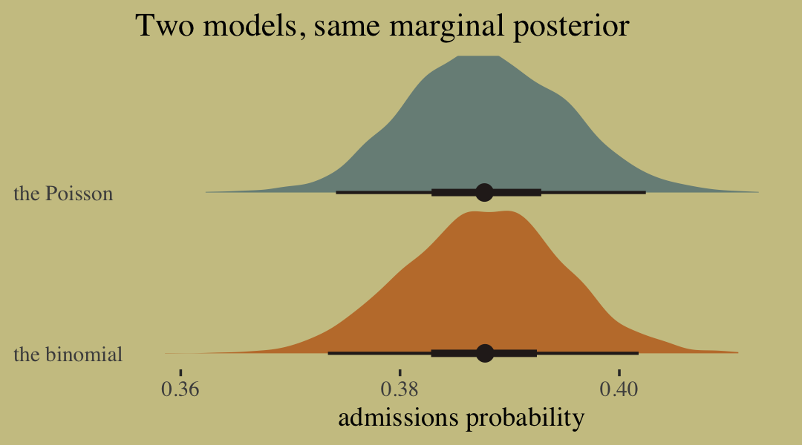
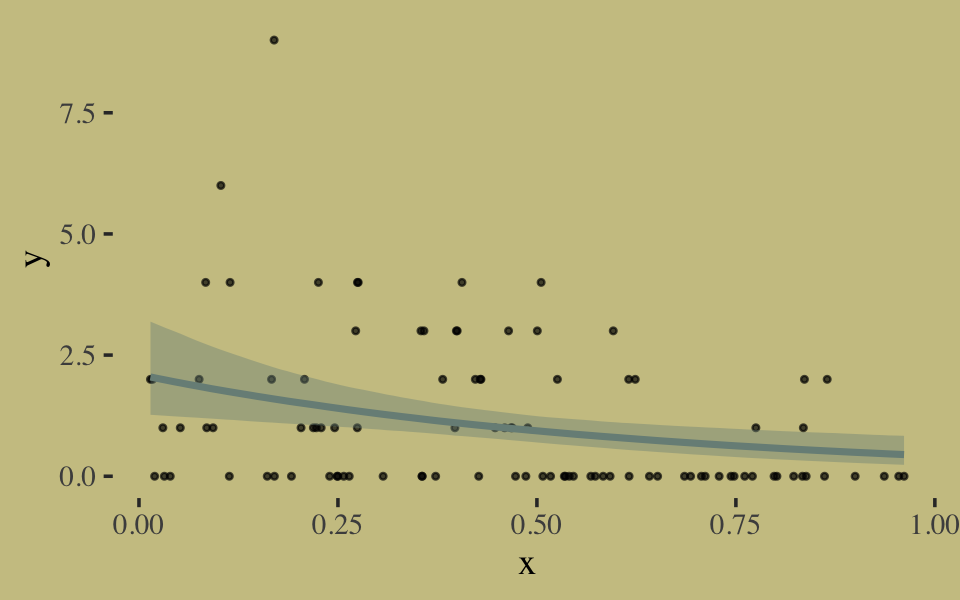

10 Counting and Classification
All over the world, every day, scientists throw away information. Sometimes this is through the removal of “outliers,” cases in the data that offend the model and are exiled. More routinely, counted things are converted to proportions before analysis. Why does analysis of proportions throw away information? Because 10/20 and ½ are the same proportion, one-half, but have very different sample sizes. Once converted to proportions, and treated as outcomes in a linear regression, the information about sample size has been destroyed.
It’s easy to retain the information about sample size. All that is needed is to model what has actually been observed, the counts instead of the proportions. (McElreath, 2015, p. 291)
In this chapter, we focus on the two most common types of count models: the binomial and the Poisson.
Side note: For a nice Bayesian way to accommodate outliers in your Gaussian models, check out my blog post, Robust linear regression with Student’s \(t\)-distribution.
10.1 Binomial regression
The basic binomial model follows the form
\[y \sim \operatorname{Binomial}(n, p),\]
where \(y\) is some count variable, \(n\) is the number of trials, and \(p\) it the probability a given trial was a 1, which is sometimes termed a success. When \(n = 1\), then \(y\) is a vector of 0s and 1s. Presuming the logit link, which we just covered in Chapter 9, models of this type are commonly termed logistic regression. When \(n > 1\), and still presuming the logit link, we might call our model an aggregated logistic regression model, or more generally an aggregated binomial regression model.
10.1.1 Logistic regression: Prosocial chimpanzees.
Load the Silk et al. (2005) chimpanzees data.
Switch from rethinking to brms.
We start with the simple intercept-only logistic regression model, which follows the statistical formula
\[\begin{align*} \text{pulled_left}_i & \sim \operatorname{Binomial}(1, p_i) \\ \operatorname{logit}(p_i) & = \alpha \\ \alpha & \sim \operatorname{Normal}(0, 10). \end{align*}\]
In the brm() formula syntax, including a | bar on the left side of a formula indicates we have extra supplementary information about our criterion. In this case, that information is that each pulled_left value corresponds to a single trial (i.e., trials(1)), which itself corresponds to the \(n = 1\) portion of the statistical formula, above.
b10.1 <-
brm(data = d,
family = binomial,
pulled_left | trials(1) ~ 1,
prior(normal(0, 10), class = Intercept),
seed = 10,
file = "fits/b10.01")You might use fixef() to get a focused summary of the intercept.
## Estimate Est.Error Q2.5 Q97.5
## Intercept 0.32 0.09 0.13 0.5The brms::inv_logit_scaled() function will be our alternative to the logistic() function in rethinking. Here we use it to convert the 89% interval estimates McElreath reported on page 294.
## [1] 0.5448789 0.6130142Here we use it to convert our fixef() output (which contains 95% intervals).
## Estimate Est.Error Q2.5 Q97.5
## Intercept 0.5785745 0.5231442 0.5333637 0.6224224With the next two chimp models, we add predictors in the usual way.
b10.2 <-
brm(data = d,
family = binomial,
pulled_left | trials(1) ~ 1 + prosoc_left,
prior = c(prior(normal(0, 10), class = Intercept),
prior(normal(0, 10), class = b)),
seed = 10,
file = "fits/b10.02")
b10.3 <-
update(b10.2,
newdata = d,
formula = pulled_left | trials(1) ~ 1 + prosoc_left + condition:prosoc_left,
seed = 10,
file = "fits/b10.03")Compute the WAIC for each model and save the results within the brmfit objects.
b10.1 <- add_criterion(b10.1, "waic")
b10.2 <- add_criterion(b10.2, "waic")
b10.3 <- add_criterion(b10.3, "waic")Compare them with the loo_compare() and make sure to add the criterion = "waic" argument.
## elpd_diff se_diff elpd_waic se_elpd_waic p_waic se_p_waic waic se_waic
## b10.2 0.0 0.0 -340.4 4.7 2.1 0.0 680.7 9.4
## b10.3 -0.8 0.4 -341.1 4.8 2.9 0.1 682.2 9.5
## b10.1 -3.7 3.1 -344.0 3.5 1.1 0.0 688.1 7.0Recall our cbind() trick to convert the differences from the \(\text{elpd}\) metric to the WAIC metric.
## waic_diff se
## b10.2 0.00 0.00
## b10.3 1.52 0.82
## b10.1 7.34 6.20For this chapter, we’ll take our color scheme from the "Moonrise2" palette from the wesanderson package (Ram & Wickham, 2018).

## [1] "#798E87" "#C27D38" "#CCC591" "#29211F"We’ll also take a few formatting cues from Edward Tufte (2001), courtesy of the ggthemes package. The theme_tufte() function will change the default font and remove some chart junk. The theme_set() function, below, will make these adjustments the default for all subsequent ggplot2 plots. To undo this, just execute theme_set(theme_default()).
library(ggthemes)
theme_set(
theme_default() +
theme_tufte() +
theme(plot.background = element_rect(fill = wes_palette("Moonrise2")[3],
color = wes_palette("Moonrise2")[3]))
)Finally, here’s our WAIC plot.
w %>%
data.frame() %>%
rownames_to_column(var = "model") %>%
ggplot() +
geom_pointrange(aes(x = reorder(model, -waic), y = waic,
ymin = waic - se_waic,
ymax = waic + se_waic,
color = model),
shape = 16) +
scale_color_manual(values = wes_palette("Moonrise2")[c(1:2, 4)]) +
coord_flip() +
labs(title = "WAIC",
x = NULL,
y = NULL) +
theme(axis.ticks.y = element_blank(),
legend.position = "none")
The full model, b10.3, did not have the lowest WAIC value. Though note how wide those standard error bars are relative to the point estimates. There’s a lot of model uncertainty there. Here are the WAIC weights.
## b10.1 b10.2 b10.3
## 0.01706203 0.66983816 0.31309981Let’s look at the parameter summaries for the theory-based model.
## Family: binomial
## Links: mu = logit
## Formula: pulled_left | trials(1) ~ prosoc_left + prosoc_left:condition
## Data: d (Number of observations: 504)
## Samples: 4 chains, each with iter = 2000; warmup = 1000; thin = 1;
## total post-warmup samples = 4000
##
## Population-Level Effects:
## Estimate Est.Error l-95% CI u-95% CI Rhat Bulk_ESS Tail_ESS
## Intercept 0.05 0.13 -0.19 0.30 1.00 3824 3250
## prosoc_left 0.62 0.22 0.18 1.05 1.00 2801 2781
## prosoc_left:condition -0.11 0.26 -0.62 0.38 1.00 2415 2567
##
## Samples were drawn using sampling(NUTS). For each parameter, Bulk_ESS
## and Tail_ESS are effective sample size measures, and Rhat is the potential
## scale reduction factor on split chains (at convergence, Rhat = 1).Here’s what the odds are multiplied by.
## [1] 1.852304Given an estimated value of 4, the probability of a pull, all else equal, would be close to 1.
## [1] 0.9820138Adding the coefficient, fixef(b10.3)[2], would yield an even higher estimate.
## [1] 0.9902088For our variant of Figure 10.2, we use brms::pp_average() in place of rethinking::ensemble().
# the combined `fitted()` results of the three models weighted by their WAICs
ppa <-
pp_average(b10.1, b10.2, b10.3,
weights = "waic",
method = "fitted") %>%
as_tibble() %>%
bind_cols(b10.3$data) %>%
distinct(Estimate, Q2.5, Q97.5, condition, prosoc_left) %>%
mutate(x_axis = str_c(prosoc_left, condition, sep = "/")) %>%
mutate(x_axis = factor(x_axis, levels = c("0/0", "1/0", "0/1", "1/1"))) %>%
rename(pulled_left = Estimate)
# the empirically-based summaries
d_plot <-
d %>%
group_by(actor, condition, prosoc_left) %>%
summarise(pulled_left = mean(pulled_left)) %>%
mutate(x_axis = str_c(prosoc_left, condition, sep = "/")) %>%
mutate(x_axis = factor(x_axis, levels = c("0/0", "1/0", "0/1", "1/1")))
# the plot
ppa %>%
ggplot(aes(x = x_axis)) +
geom_smooth(aes(y = pulled_left, ymin = Q2.5, ymax = Q97.5, group = 0),
stat = "identity",
fill = wes_palette("Moonrise2")[2], color = "black",
alpha = 1, size = 1/2) +
geom_line(data = d_plot,
aes(y = pulled_left, group = actor),
color = wes_palette("Moonrise2")[1], size = 1/3) +
scale_x_discrete("prosoc_left/condition", expand = c(.03, .03)) +
ylab("proportion pulled left") +
coord_cartesian(ylim = 0:1) +
theme(axis.ticks.x = element_blank())
McElreath didn’t show the actual pairs plot in the text. Here’s ours using mcmc_pairs().
library(bayesplot)
# this helps us set our custom color scheme
color_scheme_set(wes_palette("Moonrise2")[c(3, 1, 2, 2, 1, 1)])
# the actual plot
mcmc_pairs(x = posterior_samples(b10.3),
pars = c("b_Intercept", "b_prosoc_left", "b_prosoc_left:condition"),
off_diag_args = list(size = 1/10, alpha = 1/6),
diag_fun = "dens")
As McElreath observed, the posterior looks multivariate Gaussian.
In equations, the next model follows the form
\[\begin{align*} \text{pulled_left}_i & \sim \operatorname{Binomial}(1, p_i) \\ \operatorname{logit}(p_i) & = \alpha_{\text{actor}} + (\beta_1 + \beta_2 \text{condition}_i) \text{prosoc_left}_i \\ \alpha_{\text{actor}} & \sim \operatorname{Normal}(0, 10) \\ \beta_1 & \sim \operatorname{Normal}(0, 10) \\ \beta_2 & \sim \operatorname{Normal}(0, 10). \end{align*}\]
Enclosing the actor variable within factor() will produce the indexing we need to get actor-specific intercepts. Also notice we’re using the 0 + factor(actor) part of the model formula to suppress the brms default intercept. As such, the priors for all parameters in the model will be of class = b. And since we’re using the same Gaussian prior for each, we only need one line for the prior argument.
b10.4 <-
brm(data = d, family = binomial,
pulled_left | trials(1) ~ 0 + factor(actor) + prosoc_left + condition:prosoc_left ,
prior(normal(0, 10), class = b),
iter = 2500, warmup = 500, chains = 2, cores = 2,
control = list(adapt_delta = 0.9),
seed = 10,
file = "fits/b10.04")Within the tidyverse, the distinct() function returns the information you’d otherwise get from unique().
## actor
## 1 1
## 2 2
## 3 3
## 4 4
## 5 5
## 6 6
## 7 7With a single-level model like this, we have no need to use something like depth=2 for our posterior summary.
## Family: binomial
## Links: mu = logit
## Formula: pulled_left | trials(1) ~ 0 + factor(actor) + prosoc_left + condition:prosoc_left
## Data: d (Number of observations: 504)
## Samples: 2 chains, each with iter = 2500; warmup = 500; thin = 1;
## total post-warmup samples = 4000
##
## Population-Level Effects:
## Estimate Est.Error l-95% CI u-95% CI Rhat Bulk_ESS Tail_ESS
## factoractor1 -0.75 0.27 -1.30 -0.25 1.00 2954 2695
## factoractor2 10.68 5.18 3.96 22.97 1.00 2659 2466
## factoractor3 -1.06 0.28 -1.63 -0.51 1.00 3304 2704
## factoractor4 -1.06 0.29 -1.64 -0.50 1.00 3445 2388
## factoractor5 -0.75 0.27 -1.30 -0.23 1.00 2600 2827
## factoractor6 0.22 0.26 -0.29 0.72 1.00 2541 2994
## factoractor7 1.81 0.41 1.05 2.66 1.00 3587 2538
## prosoc_left 0.85 0.26 0.35 1.37 1.00 1844 2268
## prosoc_left:condition -0.14 0.30 -0.74 0.42 1.00 2668 2742
##
## Samples were drawn using sampling(NUTS). For each parameter, Bulk_ESS
## and Tail_ESS are effective sample size measures, and Rhat is the potential
## scale reduction factor on split chains (at convergence, Rhat = 1).Correspondingly, brms::posterior_samples() returns an object for b10.4 that doesn’t quite follow the same structure as from rethinking::extract.samples(). We just have a typical 2-dimensional data frame.
## Rows: 4,000
## Columns: 10
## $ b_factoractor1 <dbl> -1.0221980, -0.4520387, -0.5641025, -0.4954579, -1.0648298, -0.7118622, -…
## $ b_factoractor2 <dbl> 11.077767, 12.754637, 7.731595, 9.061764, 9.629672, 8.750152, 12.421351, …
## $ b_factoractor3 <dbl> -0.7751118, -0.6738382, -1.0685636, -0.8183199, -0.9004419, -1.3113981, -…
## $ b_factoractor4 <dbl> -1.0357283, -1.0891426, -0.6388104, -0.7187356, -1.1929215, -1.0856914, -…
## $ b_factoractor5 <dbl> -0.9186005, -0.5373394, -0.5783008, -0.6171997, -0.6898590, -1.0523231, -…
## $ b_factoractor6 <dbl> -0.024190686, 0.012183469, 0.581377013, 0.559323597, 0.220327873, 0.34072…
## $ b_factoractor7 <dbl> 2.173843, 2.227441, 1.807228, 1.754603, 1.634393, 1.726198, 1.446432, 1.9…
## $ b_prosoc_left <dbl> 0.5513758, 0.4736976, 0.7081934, 0.4379992, 1.0399364, 1.0401831, 0.84685…
## $ `b_prosoc_left:condition` <dbl> 0.17482624, 0.37414959, -0.15661196, -0.12380299, -0.26175570, -0.0533680…
## $ lp__ <dbl> -289.9450, -290.4555, -287.8889, -288.0465, -287.4991, -287.8331, -290.22…Here’s our variant of Figure 10.3, the \(\alpha\) density for actor == 2.
post %>%
ggplot(aes(x = b_factoractor2)) +
geom_density(color = "transparent",
fill = wes_palette("Moonrise2")[1]) +
scale_x_continuous(NULL, limits = c(0, NA)) +
scale_y_continuous(NULL, breaks = NULL) +
labs(title = "Actor 2's large and uncertain intercept",
subtitle = "Once your log-odds are above, like, 4, it's all\npretty much a probability of 1.")
Figure 10.4. shows the idiographic trajectories for four of our chimps.
# subset the `d_plot` data
d_plot_4 <-
d_plot %>%
filter(actor %in% c(3, 5:7)) %>%
ungroup() %>%
mutate(actor = str_c("actor ", actor))
# compute the model-implied estimates with `fitted()` and wrangle
f <-
fitted(b10.4) %>%
as_tibble() %>%
bind_cols(b10.4$data) %>%
filter(actor %in% c(3, 5:7)) %>%
distinct(Estimate, Q2.5, Q97.5, condition, prosoc_left, actor) %>%
select(actor, everything()) %>%
mutate(actor = str_c("actor ", actor),
x_axis = str_c(prosoc_left, condition, sep = "/")) %>%
mutate(x_axis = factor(x_axis, levels = c("0/0", "1/0", "0/1", "1/1"))) %>%
rename(pulled_left = Estimate)
# plot
f %>%
ggplot(aes(x = x_axis, y = pulled_left, group = actor)) +
geom_smooth(aes(ymin = Q2.5, ymax = Q97.5),
stat = "identity",
fill = wes_palette("Moonrise2")[2], color = "black",
alpha = 1, size = 1/2) +
geom_line(data = d_plot_4,
color = wes_palette("Moonrise2")[1], size = 1.25) +
scale_x_discrete("prosoc_left/condition", expand = c(.03, .03)) +
scale_y_continuous("proportion pulled left",
breaks = c(0, .5, 1), limits = c(0, 1)) +
theme(axis.ticks.x = element_blank(),
panel.background = element_rect(fill = alpha("white", .075),
color = "transparent")) +
facet_wrap(~actor)
McElreath mused: “There are a number of loose ends with this analysis. Does model [b10.4], with its 6 additional parameters, still look good after estimating overfitting with WAIC?” (p. 302). We won’t be following along with the practice problems at the end of the chapter, but we may as well just check the WAIC real quick.
b10.4 <- add_criterion(b10.4, "waic")
loo_compare(b10.1, b10.2, b10.3, b10.4, criterion = "waic") %>%
print(simplify = F)## elpd_diff se_diff elpd_waic se_elpd_waic p_waic se_p_waic waic se_waic
## b10.4 0.0 0.0 -265.0 10.0 8.4 0.5 530.0 20.0
## b10.2 -75.4 9.7 -340.4 4.7 2.1 0.0 680.7 9.4
## b10.3 -76.1 9.6 -341.1 4.8 2.9 0.1 682.2 9.5
## b10.1 -79.0 10.0 -344.0 3.5 1.1 0.0 688.1 7.0Here are the updated WAIC weights.
## b10.1 b10.2 b10.3 b10.4
## 0 0 0 1Both the WAIC differences and the WAIC weights suggest our 9-parameter b10.4 was substantially better than the previous models, even after correcting for overfitting. Some times group averages aren’t good enough. When you have data with many occasions within cases, fitting models that allow for individual differences is generally the way to go.
10.1.1.1 Overthinking: Using the by group_by() function.
Instead of focusing on base R, let’s work within the tidyverse. If you wanted to compute the proportion of trials pulled_left == 1 for each combination of prosoc_left, condition, and chimp actor, you’d put those last three variables within group_by() and then compute the mean() of pulled_left within summarise().
d %>%
group_by(prosoc_left, condition, actor) %>%
summarise(`proportion pulled_left` = mean(pulled_left))## # A tibble: 28 x 4
## # Groups: prosoc_left, condition [4]
## prosoc_left condition actor `proportion pulled_left`
## <int> <int> <int> <dbl>
## 1 0 0 1 0.333
## 2 0 0 2 1
## 3 0 0 3 0.278
## 4 0 0 4 0.333
## 5 0 0 5 0.333
## 6 0 0 6 0.778
## 7 0 0 7 0.778
## 8 0 1 1 0.278
## 9 0 1 2 1
## 10 0 1 3 0.167
## # … with 18 more rowsAnd since we’re working within the tidyverse, that operation returns a tibble rather than a list.
10.1.2 Aggregated binomial: Chimpanzees again, condensed.
With the tidyverse, we use group_by() and summarise() to achieve what McElreath did with aggregate().
d_aggregated <-
d %>%
select(-recipient, -block, -trial, -chose_prosoc) %>%
group_by(actor, condition, prosoc_left) %>%
summarise(x = sum(pulled_left))
d_aggregated %>%
filter(actor %in% c(1, 2))## # A tibble: 8 x 4
## # Groups: actor, condition [4]
## actor condition prosoc_left x
## <int> <int> <int> <int>
## 1 1 0 0 6
## 2 1 0 1 9
## 3 1 1 0 5
## 4 1 1 1 10
## 5 2 0 0 18
## 6 2 0 1 18
## 7 2 1 0 18
## 8 2 1 1 18To fit an aggregated binomial model in brms, we augment the <criterion> | trials() syntax where the value that goes in trials() is either a fixed number, as in this case, or variable in the data indexing \(n\). Either way, at least some of those trials will have an \(n > 1\). Here we’ll use the hard-code method, just like McElreath did in the text.
b10.5 <-
brm(data = d_aggregated,
family = binomial,
x | trials(18) ~ 1 + prosoc_left + condition:prosoc_left,
prior = c(prior(normal(0, 10), class = Intercept),
prior(normal(0, 10), class = b)),
iter = 2500, warmup = 500, cores = 2, chains = 2,
seed = 10,
file = "fits/b10.05")We might compare b10.3 with b10.5 like this.
## Estimate Est.Error Q2.5 Q97.5
## Intercept 0.05 0.13 -0.19 0.30
## prosoc_left 0.62 0.22 0.18 1.05
## prosoc_left:condition -0.11 0.26 -0.62 0.38## Estimate Est.Error Q2.5 Q97.5
## Intercept 0.05 0.13 -0.20 0.30
## prosoc_left 0.61 0.24 0.15 1.08
## prosoc_left:condition -0.09 0.27 -0.63 0.43A coefficient plot can offer a complimentary perspective.
library(broom)
# wrangle
tibble(model = str_c("b10.", c(3, 5))) %>%
mutate(fit = map(model, get)) %>%
mutate(tidy = map(fit, tidy)) %>%
unnest(tidy) %>%
filter(term != "lp__") %>%
# plot
ggplot() +
geom_pointrange(aes(x = model, y = estimate,
ymin = lower,
ymax = upper,
color = term),
shape = 16) +
scale_color_manual(values = wes_palette("Moonrise2")[c(1:2, 4)]) +
labs(x = NULL, y = NULL) +
coord_flip() +
theme(axis.ticks.y = element_blank(),
legend.position = "none") +
facet_wrap(~term, ncol = 1)
The two are close within simulation error.
10.1.3 Aggregated binomial: Graduate school admissions.
Load the infamous UCBadmit data (see Bickel et al., 1975).
Switch from rethinking to brms.
## dept applicant.gender admit reject applications
## 1 A male 512 313 825
## 2 A female 89 19 108
## 3 B male 353 207 560
## 4 B female 17 8 25
## 5 C male 120 205 325
## 6 C female 202 391 593
## 7 D male 138 279 417
## 8 D female 131 244 375
## 9 E male 53 138 191
## 10 E female 94 299 393
## 11 F male 22 351 373
## 12 F female 24 317 341Now compute our newly-constructed dummy variable, male.
The univariable logistic model with male as the sole predictor of admit follows the form
\[\begin{align*} n_{\text{admit}_i} & \sim \operatorname{Binomial}(n_i, p_i) \\ \operatorname{logit}(p_i) & = \alpha + \beta \text{male}_i \\ \alpha & \sim \operatorname{Normal}(0, 10) \\ \beta & \sim \operatorname{Normal}(0, 10). \end{align*}\]
The second model omits the male predictor.
b10.6 <-
brm(data = d,
family = binomial,
admit | trials(applications) ~ 1 + male ,
prior = c(prior(normal(0, 10), class = Intercept),
prior(normal(0, 10), class = b)),
iter = 2500, warmup = 500, cores = 2, chains = 2,
seed = 10,
# this line isn't usually necessary,
# but it will help with our `loo_moment_match()` code below
save_all_pars = T,
file = "fits/b10.06")
b10.7 <-
brm(data = d,
family = binomial,
admit | trials(applications) ~ 1,
prior(normal(0, 10), class = Intercept),
iter = 2500, warmup = 500, cores = 2, chains = 2,
seed = 10,
save_all_pars = T,
file = "fits/b10.07")Compute the information criteria for each model and save the results within the brmfit objects.
Here’s the WAIC comparison.
## elpd_diff se_diff elpd_waic se_elpd_waic p_waic se_p_waic waic se_waic
## b10.6 0.0 0.0 -495.9 164.0 111.6 39.8 991.9 328.0
## b10.7 -29.1 82.7 -525.0 164.5 85.3 37.2 1050.0 329.1If you prefer the difference in the WAIC metric, use our cbind() conversion method from above. Here are the WAIC weights.
## b10.6 b10.7
## 1 0Bonus: Information criteria digression.
Let’s see what happens if we switch to the LOO.
If you just ape the text and use the WAIC, everything appears fine. But holy smokes look at those nasty warning messages from the loo()! One of the frightening but ultimately handy things about working with the PSIS-LOO is that it requires we estimate a Pareto \(k\) parameter, which you can learn all about in the loo-package section of the loo reference manual (Gabry, 2020a). As it turns out, the Pareto \(k\) can be used as a diagnostic tool (Vehtari & Gabry, 2020). Each case in the data gets its own \(k\) value and we like it when those \(k\)s are low. The makers of the loo package get worried when those \(k\)s exceed 0.7 and as a result, loo() spits out a warning message when they do.
First things first, if you explicitly open the loo package, you’ll have access to some handy diagnostic functions.
We’ll be leveraging those \(k\) values with the pareto_k_table() and pareto_k_ids() functions. Both functions take objects created by the loo() or psis() functions. So, before we can get busy, we’ll first make two objects with the loo().
There are those warning messages, again. Using the loo-object for model b10.6, which we’ve named l_b10.6, let’s take a look at the pareto_k_table() function.
## Pareto k diagnostic values:
## Count Pct. Min. n_eff
## (-Inf, 0.5] (good) 4 33.3% 372
## (0.5, 0.7] (ok) 2 16.7% 134
## (0.7, 1] (bad) 1 8.3% 44
## (1, Inf) (very bad) 5 41.7% 2You may have noticed that this same table pops out when you just do something like loo(b10.6). Recall that this data set has 12 observations (i.e., execute count(d)). With pareto_k_table(), we see how the Pareto \(k\) values have been categorized into bins ranging from “good” to “very bad”. Clearly, we like low \(k\)s. In this example, our observations are all over the place, with 6 in the “bad” to “very bad” \(k\) ranges. We can take a closer look like this:

So when you plot() a loo object, you get a nice diagnostic plot for those \(k\) values, ordered by observation number. Our plot indicates cases 1, 2, 3, 11, and 12 had “very bad” \(k\) values for this model. If we wanted to further verify to ourselves which observations those were, we’d use the pareto_k_ids() function.
## [1] 1 2 3 11 12Note our use of the threshold argument. Play around with it to see how it works. If you want an explicit look at those \(k\) values, you execute something like this.
## $pareto_k
## [1] 1.9447410 1.2970144 1.3323975 0.1915600 0.3896156 0.8395429 0.6867176 0.6090430 0.3987192 0.3660039
## [11] 2.0026905 1.3052705
##
## $n_eff
## [1] 1.988846 2.941800 4.328865 2118.644720 1131.869889 44.179627 134.314797 340.277008
## [9] 685.593572 372.310336 6.358637 21.444793The pareto_k values can be used to examine cases that are overly-influential on the model parameters, something like a Cook’s \(D_{i}\). See, for example this discussion on stackoverflow.com in which several members of the Stan team weighed in. The issue is also discussed in Vehtari et al. (2017) and in this presentation by Aki Vehtari.
Anyway, the implication of all this is these values suggest model b10.6 isn’t a great fit for these data.
Part of the warning message for model b10.6 read:
It is recommended to set ‘moment_match = TRUE’ in order to perform moment matching for problematic observations.
Let’s do that using the brms::loo_moment_match() function.
Check the results.
##
## Computed from 4000 by 12 log-likelihood matrix
##
## Estimate SE
## elpd_loo -497.9 163.5
## p_loo 107.8 39.4
## looic 995.9 327.0
## ------
## Monte Carlo SE of elpd_loo is 0.2.
##
## Pareto k diagnostic values:
## Count Pct. Min. n_eff
## (-Inf, 0.5] (good) 7 58.3% 372
## (0.5, 0.7] (ok) 5 41.7% 80
## (0.7, 1] (bad) 0 0.0% <NA>
## (1, Inf) (very bad) 0 0.0% <NA>
##
## All Pareto k estimates are ok (k < 0.7).
## See help('pareto-k-diagnostic') for details.Now that looks better. We’ll do the same thing for model b10.7.
Okay, let’s compare models with formal \(\text{elpd}_\text{loo}\) differences before and after adjusting with the moment match approach.
## elpd_diff se_diff
## b10.6 0.0 0.0
## b10.7 -31.5 78.0## elpd_diff se_diff
## b10.6 0.0 0.0
## b10.7 -24.0 80.1In this case, the results are similar. The standard errors for the differences are huge compared to the point estimates, suggesting large uncertainty. Watch out for this in your real-world data, though.
But this has all been a tangent from the central thrust of this section.
Back from our information criteria digression.
Let’s get back on track with the text. Here’s a look at b10.6, the unavailable model.
## Family: binomial
## Links: mu = logit
## Formula: admit | trials(applications) ~ 1 + male
## Data: d (Number of observations: 12)
## Samples: 2 chains, each with iter = 2500; warmup = 500; thin = 1;
## total post-warmup samples = 4000
##
## Population-Level Effects:
## Estimate Est.Error l-95% CI u-95% CI Rhat Bulk_ESS Tail_ESS
## Intercept -0.83 0.05 -0.93 -0.73 1.00 2767 2567
## male 0.61 0.06 0.48 0.74 1.00 2734 2243
##
## Samples were drawn using sampling(NUTS). For each parameter, Bulk_ESS
## and Tail_ESS are effective sample size measures, and Rhat is the potential
## scale reduction factor on split chains (at convergence, Rhat = 1).Here’s the relative difference in admission odds.
## [1] 1.84And now we’ll compute difference in admission probabilities.
post <- posterior_samples(b10.6)
post %>%
mutate(p_admit_male = inv_logit_scaled(b_Intercept + b_male),
p_admit_female = inv_logit_scaled(b_Intercept),
diff_admit = p_admit_male - p_admit_female) %>%
summarise(`2.5%` = quantile(diff_admit, probs = .025),
`50%` = median(diff_admit),
`97.5%` = quantile(diff_admit, probs = .975))## 2.5% 50% 97.5%
## 1 0.1133218 0.1414381 0.1695103Instead of the summarise() code, we could have also used tidybayes::median_qi(diff_admit). It’s good to have options. Here’s our version of Figure 10.5.
d <-
d %>%
mutate(case = factor(1:12))
p <-
predict(b10.6) %>%
as_tibble() %>%
bind_cols(d)
text <-
d %>%
group_by(dept) %>%
summarise(case = mean(as.numeric(case)),
admit = mean(admit / applications) + .05)
ggplot(data = d, aes(x = case, y = admit / applications)) +
geom_pointrange(data = p,
aes(y = Estimate / applications,
ymin = Q2.5 / applications ,
ymax = Q97.5 / applications),
color = wes_palette("Moonrise2")[1],
shape = 1, alpha = 1/3) +
geom_point(color = wes_palette("Moonrise2")[2]) +
geom_line(aes(group = dept),
color = wes_palette("Moonrise2")[2]) +
geom_text(data = text,
aes(y = admit, label = dept),
color = wes_palette("Moonrise2")[2],
family = "serif") +
labs(title = "Posterior validation check",
y = "Proportion admitted") +
coord_cartesian(ylim = c(0, 1)) +
theme(axis.ticks.x = element_blank())
As alluded to in all that LOO/pareto_k talk, above, this is not a great fit. So we’ll ditch the last model paradigm for one that answers the new question “What is the average difference in probability of admission between females and males within departments?” (p. 307). The statistical formula for the full model follows the form
\[\begin{align*} n_{\text{admit}_i} & \sim \operatorname{Binomial}(n_i, p_i) \\ \operatorname{logit}(p_i) & = \alpha_{\text{dept}_i} + \beta \text{male}_i \\ \alpha_{\text{dept}} & \sim \operatorname{Normal}(0, 10) \\ \beta & \sim \operatorname{Normal}(0, 10). \end{align*}\]
We don’t need to coerce an index like McElreath did in the text. But here are the models.
b10.8 <-
brm(data = d,
family = binomial,
admit | trials(applications) ~ 0 + dept,
prior(normal(0, 10), class = b),
iter = 2500, warmup = 500, cores = 2, chains = 2,
seed = 10,
file = "fits/b10.08")
b10.9 <-
update(b10.8,
newdata = d,
formula = admit | trials(applications) ~ 0 + dept + male,
seed = 10,
file = "fits/b10.09")Let’s make two more loo() objects, this time using the reloo = TRUE approach.
Now compare them.
## elpd_diff se_diff
## b10.8 0.0 0.0
## b10.9 -7.5 4.1
## b10.6 -436.7 160.4
## b10.7 -460.6 158.6Here are the LOO weights.
## b10.6 b10.7 b10.8 b10.9
## 0.000 0.000 0.953 0.047The parameters summaries for our multivariable model, b10.9, look like this.
## Estimate Est.Error Q2.5 Q97.5
## deptA 0.68 0.10 0.49 0.88
## deptB 0.64 0.12 0.41 0.87
## deptC -0.58 0.08 -0.73 -0.44
## deptD -0.61 0.08 -0.78 -0.45
## deptE -1.06 0.10 -1.26 -0.87
## deptF -2.63 0.16 -2.95 -2.33
## male -0.10 0.08 -0.27 0.06And on the proportional odds scale, the posterior mean for b_male is:
## [1] 0.9047538Since we’ve been using brms, there’s no need to fit our version of McElreath’s m10.9stan. We already have that in our b10.9. But just for kicks and giggles, here’s another way to get the model summary.
## Inference for Stan model: c99ebdfbc111fae2fa41c59b77ba5362.
## 2 chains, each with iter=2500; warmup=500; thin=1;
## post-warmup draws per chain=2000, total post-warmup draws=4000.
##
## mean se_mean sd 2.5% 25% 50% 75% 97.5% n_eff Rhat
## b_deptA 0.68 0.00 0.10 0.49 0.62 0.68 0.75 0.88 1727 1
## b_deptB 0.64 0.00 0.12 0.41 0.56 0.64 0.72 0.87 1797 1
## b_deptC -0.58 0.00 0.08 -0.73 -0.63 -0.58 -0.53 -0.44 2978 1
## b_deptD -0.61 0.00 0.08 -0.78 -0.67 -0.61 -0.56 -0.45 2438 1
## b_deptE -1.06 0.00 0.10 -1.26 -1.13 -1.06 -0.99 -0.87 4194 1
## b_deptF -2.63 0.00 0.16 -2.95 -2.74 -2.63 -2.52 -2.33 3408 1
## b_male -0.10 0.00 0.08 -0.27 -0.16 -0.10 -0.04 0.06 1361 1
## lp__ -70.72 0.04 1.90 -75.42 -71.72 -70.38 -69.33 -68.03 1808 1
##
## Samples were drawn using NUTS(diag_e) at Tue Oct 6 16:22:26 2020.
## For each parameter, n_eff is a crude measure of effective sample size,
## and Rhat is the potential scale reduction factor on split chains (at
## convergence, Rhat=1).Here’s our version of Figure 10.6, the posterior validation check.
predict(b10.9) %>%
as_tibble() %>%
bind_cols(d) %>%
ggplot(aes(x = case, y = admit / applications)) +
geom_pointrange(aes(y = Estimate / applications,
ymin = Q2.5 / applications ,
ymax = Q97.5 / applications),
color = wes_palette("Moonrise2")[1],
shape = 1, alpha = 1/3) +
geom_point(color = wes_palette("Moonrise2")[2]) +
geom_line(aes(group = dept),
color = wes_palette("Moonrise2")[2]) +
geom_text(data = text,
aes(y = admit, label = dept),
color = wes_palette("Moonrise2")[2],
family = "serif") +
labs(title = "Posterior validation check",
y = "Proportion admitted") +
coord_cartesian(ylim = c(0, 1)) +
theme(axis.ticks.x = element_blank())
The model predictions are imperfect, but way more valid than before. The posterior looks reasonably multivariate Gaussian.

10.1.3.1 Rethinking: Simpson’s paradox is not a paradox.
This empirical example is a famous one in statistical teaching. It is often used to illustrate a phenomenon known as Simpson’s paradox. Like most paradoxes, there is no violation of logic, just of intuition. And since different people have different intuition, Simpson’s paradox means different things to different people. The poor intuition being violated in this case is that a positive association in the entire population should also hold within each department. (p. 309, emphasis in the original)
In my field of clinical psychology, Simpson’s paradox is an important, if under-appreciated, phenomenon. If you’re in the social sciences as well, I highly recommend spending more time thinking about it. To get you started, I blogged about it here and Kievit et al. (2013) wrote a great tutorial paper called Simpson’s paradox in psychological science: a practical guide.
10.1.3.2 Overthinking: WAIC and aggregated binomial models.
McElreath wrote:
The
WAICfunction inrethinkingdetects aggregated binomial models and automatically splits them apart into 0/1 Bernoulli trials, for the purpose of calculating WAIC. It does this, because WAIC is computed point by point (see Chapter 6). So what you define as a “point” affects WAIC’s value. In an aggregated binomial each “point” is a bunch of independent trials that happen to share the same predictor values. In order for the disaggregated and aggregated models to agree, it makes sense to use the disaggregated representation. (p. 309)
To my knowledge, brms::waic() and brms::loo() do not do this, which might well be why some of our values didn’t match up with those in the text. If you have additional insight on this, please share with the rest of the class.
10.1.4 Fitting binomial regressions with glm().
We’re not here to learn frequentist code, so we’re going to skip most of this section. But model m.good is worth fitting. Here are the data.
# outcome and predictor almost perfectly associated
y <- c(rep(0, 10), rep(1, 10))
x <- c(rep(-1, 9), rep(1, 11))We are going to depart from McElreath’s naming convention in the text and call this fit b10.good. It’ll make it easier to find in this project’s fits folder.
b10.good <-
brm(data = list(y = y, x = x),
family = binomial,
y | trials(1) ~ 1 + x,
prior = c(prior(normal(0, 10), class = Intercept),
prior(normal(0, 10), class = b)),
seed = 10,
file = "fits/b10.good") Our model summary will differ a bit from the one in the text. It seems this is because of the MAP/HMC contrast and our choice of priors.
## Family: binomial
## Links: mu = logit
## Formula: y | trials(1) ~ 1 + x
## Data: list(y = y, x = x) (Number of observations: 20)
## Samples: 4 chains, each with iter = 2000; warmup = 1000; thin = 1;
## total post-warmup samples = 4000
##
## Population-Level Effects:
## Estimate Est.Error l-95% CI u-95% CI Rhat Bulk_ESS Tail_ESS
## Intercept -5.51 4.31 -15.61 0.37 1.01 440 732
## x 8.27 4.31 2.45 18.29 1.01 459 804
##
## Samples were drawn using sampling(NUTS). For each parameter, Bulk_ESS
## and Tail_ESS are effective sample size measures, and Rhat is the potential
## scale reduction factor on split chains (at convergence, Rhat = 1).You might experiment with different prior \(SD\)s to see how they influence the posterior \(SD\)s. Anyways, here’s the pairs() plot McElreath excluded from the text.

That posterior, my friends, is not multivariate Gaussian. The plot deserves an extensive quote from McElreath.
Inspecting the pairs plot (
notshown) demonstrates just how subtle even simple models can be, once we start working with GLMs. I don’t say this to scare the reader. But it’s true that even simple models can behave in complicated ways. How you fit the model is part of the model, and in principle no GLM is safe for MAP estimation. (p. 311, emphasis added)
10.2 Poisson regression
When a binomial distribution has a very small probability of an event \(p\) and a very large number of trials \(n\), then it takes on a special shape. The expected value of a binomial distribution is just \(np\), and its variance is \(np(1 - p)\). But when \(n\) is very large and \(p\) is very small, then these are approximately the same. (p. 311)
Data of this kind are often called count data. Here we simulate some.
set.seed(10) # make the results reproducible
tibble(y = rbinom(1e5, 1000, 1/1000)) %>%
summarise(y_mean = mean(y),
y_variance = var(y))## # A tibble: 1 x 2
## y_mean y_variance
## <dbl> <dbl>
## 1 0.994 0.995Yes, those statistics are virtually the same. When dealing with Poisson data, \(\mu = \sigma^2\). When you have a number of trials for which \(n\) is unknown or much larger than seen in the data, the Poisson likelihood is a useful tool. We define it as
\[y \sim \operatorname{Poisson}(\lambda).\]
As \(\lambda\) expresses both mean and variance because, within this model, the variance scales right along with the mean. Since \(\lambda\) is constrained to be positive, we typically use the log link. Thus the basic Poisson regression model is
\[\begin{align*} y_i & \sim \operatorname{Poisson}(\lambda_i) \\ \log (\lambda_i) & = \alpha + \beta x_i, \end{align*}\]
where all model parameters receive priors following the forms we’ve been practicing. We read further:
The parameter \(\lambda\) is the expected value, but it’s also commonly thought of as a rate. Both interpretations are correct, and realizing this allows to make Poisson models for which the exposure varies across cases \(i\)…
Implicitly, \(\lambda\) is equal to an expected number of events, \(\mu\), per unit of time or distance, \(\tau\). This implies that \(\lambda = \mu/\tau\), which lets us redefine the link:
\[\begin{align*} y_i & \sim \operatorname{Poisson}(\lambda_i) \\ \log \lambda_i & = \log \frac{\mu_i}{\tau_i} = \alpha + \beta x_i \end{align*}\]
Since the logarithm of a ratio is the same as a difference of logarithms, we can also write:
\[\log \lambda_i = \log \mu_i - \log \tau_i = \alpha + \beta x_i\]
These \(\tau\) values are the “exposures.” So if different observations \(i\) have different exposures, this implies that the expected value on row \(i\) is given by:
\[\log \mu_i = \log \tau_i + \alpha + \beta x_i\]
When \(\tau_i = 1\), then \(\log \tau_i = 0\) and we’re back where we started. But when the exposure varies across cases, then \(\tau_i\) does the important work of correctly scaling the expected number of events for each case \(i\). (pp. 312–313)
10.2.1 Example: Oceanic tool complexity.
Load the Kline data (see Kline & Boyd, 2010).
Switch from rethinking to brms.
## culture population contact total_tools mean_TU
## 1 Malekula 1100 low 13 3.2
## 2 Tikopia 1500 low 22 4.7
## 3 Santa Cruz 3600 low 24 4.0
## 4 Yap 4791 high 43 5.0
## 5 Lau Fiji 7400 high 33 5.0
## 6 Trobriand 8000 high 19 4.0
## 7 Chuuk 9200 high 40 3.8
## 8 Manus 13000 low 28 6.6
## 9 Tonga 17500 high 55 5.4
## 10 Hawaii 275000 low 71 6.6Here are our new columns.
Our statistical model will follow the form
\[\begin{align*} \text{total_tools}_i & \sim \operatorname{Poisson}(\lambda_i) \\ \log (\lambda_i) & = \alpha + \beta_1 \text{log_pop}_i + \beta_2 \text{contact_high}_i + \beta_3 \text{contact_high}_i \times \text{log_pop}_i \\ \alpha & \sim \operatorname{Normal}(0, 100) \\ \beta_1 & \sim \operatorname{Normal}(0, 1) \\ \beta_2 & \sim \operatorname{Normal}(0, 1) \\ \beta_3 & \sim \operatorname{Normal}(0, 1). \end{align*}\]
The only new thing in our model code is family = poisson. brms defaults to the log() link.
b10.10 <-
brm(data = d,
family = poisson,
total_tools ~ 1 + log_pop + contact_high + contact_high:log_pop,
prior = c(prior(normal(0, 100), class = Intercept),
prior(normal(0, 1), class = b)),
iter = 3000, warmup = 1000, chains = 4, cores = 4,
seed = 10,
file = "fits/b10.10") ## Family: poisson
## Links: mu = log
## Formula: total_tools ~ 1 + log_pop + contact_high + contact_high:log_pop
## Data: d (Number of observations: 10)
## Samples: 4 chains, each with iter = 3000; warmup = 1000; thin = 1;
## total post-warmup samples = 8000
##
## Population-Level Effects:
## Estimate Est.Error l-95% CI u-95% CI Rhat Bulk_ESS Tail_ESS
## Intercept 0.93 0.37 0.21 1.64 1.00 3816 4552
## log_pop 0.26 0.04 0.20 0.34 1.00 4106 4468
## contact_high -0.11 0.82 -1.72 1.51 1.00 2801 3560
## log_pop:contact_high 0.04 0.09 -0.13 0.22 1.00 2823 3585
##
## Samples were drawn using sampling(NUTS). For each parameter, Bulk_ESS
## and Tail_ESS are effective sample size measures, and Rhat is the potential
## scale reduction factor on split chains (at convergence, Rhat = 1).We can use vcov() to extract the correlation matrix for the parameters.
## Intercept log_pop contact_high log_pop:contact_high
## Intercept 1.00 -0.98 -0.14 0.07
## log_pop -0.98 1.00 0.14 -0.10
## contact_high -0.14 0.14 1.00 -0.99
## log_pop:contact_high 0.07 -0.10 -0.99 1.00And here’s the coefficient plot via bayesplot::mcmc_intervals().
post <- posterior_samples(b10.10)
# we'll set a renewed color theme
color_scheme_set(wes_palette("Moonrise2")[c(2, 1, 4, 2, 1, 1)])
post %>%
select(-lp__) %>%
rename(b_interaction = `b_log_pop:contact_high`) %>%
mcmc_intervals(prob = .5, prob_outer = .95) +
theme(axis.text.y = element_text(hjust = 0),
axis.ticks.y = element_blank())
How plausible is it a high-contact island will have more tools than a low-contact island?
post <-
post %>%
mutate(lambda_high = exp(b_Intercept + b_contact_high + (b_log_pop + `b_log_pop:contact_high`) * 8),
lambda_low = exp(b_Intercept + b_log_pop * 8)) %>%
mutate(diff = lambda_high - lambda_low)
post %>%
summarise(sum = sum(diff > 0) / length(diff))## sum
## 1 0.960375Quite, it turns out. Behold the corresponding Figure 10.8.a.
post %>%
ggplot(aes(x = diff)) +
geom_density(color = "transparent",
fill = wes_palette("Moonrise2")[1]) +
geom_vline(xintercept = 0, linetype = 2,
color = wes_palette("Moonrise2")[2]) +
scale_y_continuous(NULL, breaks = NULL) +
xlab("lambda_high - lambda_low")
I’m not happy with how clunky this solution is, but one way to get those marginal dot and line plots for the axes is to make intermediary tibbles. Anyway, here’s a version of Figure 10.8.b.
# intermediary tibbles for our the dot and line portoin of the plot
point_tibble <-
tibble(x = c(median(post$b_contact_high), min(post$b_contact_high)),
y = c(min(post$`b_log_pop:contact_high`), median(post$`b_log_pop:contact_high`)))
line_tibble <-
tibble(parameter = rep(c("b_contact_high", "b_log_pop:contact_high"), each = 2),
x = c(quantile(post$b_contact_high, probs = c(.025, .975)),
rep(min(post$b_contact_high), times = 2)),
y = c(rep(min(post$`b_log_pop:contact_high`), times = 2),
quantile(post$`b_log_pop:contact_high`, probs = c(.025, .975))))
# the plot
post %>%
ggplot(aes(x = b_contact_high, y = `b_log_pop:contact_high`)) +
geom_point(color = wes_palette("Moonrise2")[1],
size = 1/10, alpha = 1/10) +
geom_point(data = point_tibble,
aes(x = x, y = y)) +
geom_line(data = line_tibble,
aes(x = x, y = y, group = parameter))
The ggMarginal() function from the ggExtra package (Attali & Baker, 2019) offers an interesting alternative.
library(ggExtra)
# the base plot
p <-
post %>%
ggplot(aes(x = b_contact_high, y = `b_log_pop:contact_high`)) +
geom_point(color = wes_palette("Moonrise2")[1],
size = 1/10, alpha = 1/10)
# add the marginal plots
p %>%
ggMarginal(data = post,
type = 'density',
color = "transparent",
fill = wes_palette("Moonrise2")[1], size = 4)
To get a feel for what’s possible with ggMarginal(), check out Dean Attali’s great shiny app.
Here we deconstruct model b10.10, bit by bit.
# no interaction
b10.11 <-
update(b10.10, formula = total_tools ~ 1 + log_pop + contact_high,
seed = 10,
file = "fits/b10.11")
# no contact rate
b10.12 <-
update(b10.10, formula = total_tools ~ 1 + log_pop,
seed = 10,
file = "fits/b10.12")
# no log-population
b10.13 <-
update(b10.10, formula = total_tools ~ 1 + contact_high,
seed = 10,
file = "fits/b10.13")
# intercept only
b10.14 <-
update(b10.10, formula = total_tools ~ 1,
seed = 10,
file = "fits/b10.14")I know we got all excited with the LOO, above. Let’s just be lazy and go WAIC. [Though beware, the LOO opens up a similar can of worms, here.]
b10.10 <- add_criterion(b10.10, criterion = "waic")
b10.11 <- add_criterion(b10.11, criterion = "waic")
b10.12 <- add_criterion(b10.12, criterion = "waic")
b10.13 <- add_criterion(b10.13, criterion = "waic")
b10.14 <- add_criterion(b10.14, criterion = "waic")Now compare them.
w <- loo_compare(b10.10, b10.11, b10.12, b10.13, b10.14, criterion = "waic")
cbind(waic_diff = w[, 1] * -2,
se = w[, 2] * 2) %>%
round(digits = 2)## waic_diff se
## b10.11 0.00 0.00
## b10.10 1.32 1.32
## b10.12 5.36 8.21
## b10.14 62.60 34.50
## b10.13 71.87 46.93Let’s get those WAIC weights, too.
## b10.10 b10.11 b10.12 b10.13 b10.14
## 0.33 0.63 0.04 0.00 0.00Now wrangle w a little and make the WAIC plot.
w %>%
data.frame() %>%
rownames_to_column(var = "model") %>%
ggplot(aes(x = waic,
xmin = waic - se_waic,
xmax = waic + se_waic,
y = reorder(model, -waic),
color = model)) +
geom_pointrange(shape = 16, show.legend = F) +
scale_color_manual(values = wes_palette("Moonrise2")[c(1, 2, 1, 1, 1)]) +
labs(title = "WAIC",
x = NULL,
y = NULL) +
theme(axis.ticks.y = element_blank())
Here’s our version of Figure 10.9. Recall, to do an “ensemble” posterior prediction in brms, one uses the pp_average() function. I know we were just lazy and focused on the WAIC. But let’s play around, a bit. Here we’ll weight the models based on the LOO by adding a weights = "loo" argument to the pp_average() function. If you check the corresponding section of the brms reference manual (Bürkner, 2020b), you’ll find several weighting schemes.
nd <-
crossing(contact_high = 0:1,
log_pop = seq(from = 6.5, to = 13, length.out = 50))
ppa <-
pp_average(b10.10, b10.11, b10.12,
weights = "loo",
method = "fitted",
newdata = nd) %>%
as_tibble() %>%
bind_cols(nd)
ppa %>%
ggplot(aes(x = log_pop, group = contact_high, color = contact_high)) +
geom_smooth(aes(y = Estimate, ymin = Q2.5, ymax = Q97.5, fill = contact_high),
stat = "identity",
alpha = 1/4, size = 1/2) +
geom_text(data = d,
aes(y = total_tools, label = total_tools),
size = 3.5) +
labs(subtitle = "Blue is the high contact rate; black is the low.",
x = "log population",
y = "total tools") +
coord_cartesian(xlim = c(7.1, 12.4),
ylim = c(12, 70)) +
theme(legend.position = "none",
panel.border = element_blank())
In case you were curious, here are those LOO weights.
## b10.10 b10.11 b10.12
## 0.31099478 0.63757617 0.0514290510.2.2 MCMC islands.
We fit our analogue to m10.10stan, b10.10, some time ago.
## Family: poisson
## Links: mu = log
## Formula: total_tools ~ 1 + log_pop + contact_high + contact_high:log_pop
## Data: d (Number of observations: 10)
## Samples: 4 chains, each with iter = 3000; warmup = 1000; thin = 1;
## total post-warmup samples = 8000
##
## Population-Level Effects:
## Estimate Est.Error l-95% CI u-95% CI Rhat Bulk_ESS Tail_ESS
## Intercept 0.93 0.37 0.21 1.64 1.00 3816 4552
## log_pop 0.26 0.04 0.20 0.34 1.00 4106 4468
## contact_high -0.11 0.82 -1.72 1.51 1.00 2801 3560
## log_pop:contact_high 0.04 0.09 -0.13 0.22 1.00 2823 3585
##
## Samples were drawn using sampling(NUTS). For each parameter, Bulk_ESS
## and Tail_ESS are effective sample size measures, and Rhat is the potential
## scale reduction factor on split chains (at convergence, Rhat = 1).Center log_pop.
Now fit the log_pop-centered model.
b10.10_c <-
brm(data = d,
family = poisson,
total_tools ~ 1 + log_pop_c + contact_high + contact_high:log_pop_c,
prior = c(prior(normal(0, 10), class = Intercept),
prior(normal(0, 1), class = b)),
iter = 3000, warmup = 1000, chains = 4, cores = 4,
seed = 10,
file = "fits/b10.10_c")## Family: poisson
## Links: mu = log
## Formula: total_tools ~ 1 + log_pop_c + contact_high + contact_high:log_pop_c
## Data: d (Number of observations: 10)
## Samples: 4 chains, each with iter = 3000; warmup = 1000; thin = 1;
## total post-warmup samples = 8000
##
## Population-Level Effects:
## Estimate Est.Error l-95% CI u-95% CI Rhat Bulk_ESS Tail_ESS
## Intercept 3.31 0.09 3.14 3.48 1.00 5352 6011
## log_pop_c 0.26 0.04 0.19 0.33 1.00 6267 6190
## contact_high 0.28 0.12 0.05 0.51 1.00 5640 5820
## log_pop_c:contact_high 0.07 0.17 -0.27 0.40 1.00 6427 5818
##
## Samples were drawn using sampling(NUTS). For each parameter, Bulk_ESS
## and Tail_ESS are effective sample size measures, and Rhat is the potential
## scale reduction factor on split chains (at convergence, Rhat = 1).We’ve been using bayesplot::mcmc_pairs() a lot for our posterior pairs plots. Let’s get in a little practice with GGally::ggpairs() for Figure 10.10. In Chapters 5 and 8, we used custom functions to augment the default ggpairs() output. We’ll continue that trend, here. Here are the custom functions for the upper triangle, the diagonal, and the lower triangle.
my_upper <- function(data, mapping, ...) {
# get the x and y data to use the other code
x <- eval_data_col(data, mapping$x)
y <- eval_data_col(data, mapping$y)
r <- unname(cor.test(x, y)$estimate)
rl <- formatC(r, format = 'f', digits = 2)
# plot the cor value
ggally_text(
label = rl,
mapping = aes(),
size = 4,
color = wes_palette("Moonrise2")[4],
alpha = 4/5,
family = "Times") +
theme_void()
}
my_diag <- function(data, mapping, ...) {
ggplot(data = data, mapping = mapping) +
geom_density(fill = wes_palette("Moonrise2")[2], size = 0) +
theme_void()
}
my_lower <- function(data, mapping, ...) {
ggplot(data = data, mapping = mapping) +
geom_point(color = wes_palette("Moonrise2")[1],
size = 1/10, alpha = 1/10) +
theme_void()
}To learn more about the nature of the code for the my_upper() function, check out issue #139 in the GGally GitHub repository. Here are our plots for the left and right panels of Figure 10.10.
library(GGally)
# left panel for `b10.10`
posterior_samples(b10.10) %>%
select(-lp__) %>%
set_names(c("alpha", "beta[log_pop]", "beta[contact_high]", "beta[interaction]")) %>%
ggpairs(upper = list(continuous = my_upper),
diag = list(continuous = my_diag),
lower = list(continuous = my_lower),
labeller = "label_parsed") +
ggtitle("Model: b10.10") +
theme(strip.text = element_text(size = 11))
# right panel for `b10.10_c`
posterior_samples(b10.10_c) %>%
select(-lp__) %>%
set_names(c("alpha", "beta[log_pop_c]", "beta[contact_high]", "beta[interaction]")) %>%
ggpairs(upper = list(continuous = my_upper),
diag = list(continuous = my_diag),
lower = list(continuous = my_lower),
labeller = "label_parsed") +
ggtitle("Model: b10.10_c") +
theme(strip.text = element_text(size = 11))
In case you were wondering, it turns out you cannot combine GGally::ggpairs() plots with syntax from the patchwork package. Check out issue #52 from the patchwork GitHub repo to learn why.
10.2.3 Example: Exposure and the offset.
For the last Poisson example, we’ll look at a case where the exposure varies across observations. When the length of observation, area of sampling, or intensity of sampling varies, the counts we observe also naturally vary. Since a Poisson distribution assumes that the rate of events is constant in time (or space), it’s easy to handle this. All we need to do, as explained on page 312 [of the text], is to add the logarithm of the exposure to the linear model. The term we add is typically called an offset. (p. 321, emphasis in the original)
Here we simulate our data.
set.seed(10)
num_days <- 30
y <- rpois(num_days, 1.5)
num_weeks <- 4
y_new <- rpois(num_weeks, 0.5 * 7)Let’s make them tidy and add log_days.
(
d <-
tibble(y = c(y, y_new),
days = c(rep(1, num_days), rep(7, num_weeks)),
monastery = c(rep(0, num_days), rep(1, num_weeks))) %>%
mutate(log_days = log(days))
)## # A tibble: 34 x 4
## y days monastery log_days
## <int> <dbl> <dbl> <dbl>
## 1 1 1 0 0
## 2 1 1 0 0
## 3 1 1 0 0
## 4 2 1 0 0
## 5 0 1 0 0
## 6 1 1 0 0
## 7 1 1 0 0
## 8 1 1 0 0
## 9 2 1 0 0
## 10 1 1 0 0
## # … with 24 more rowsWith the brms package, you use the offset() syntax, in which you put a pre-processed variable like log_days or the log of a variable, such as log(days).
b10.15 <-
brm(data = d,
family = poisson,
y ~ 1 + offset(log_days) + monastery,
prior = c(prior(normal(0, 100), class = Intercept),
prior(normal(0, 1), class = b)),
iter = 2500, warmup = 500, cores = 2, chains = 2,
seed = 10,
file = "fits/b10.15")As we look at the model summary, keep in mind that the parameters are on the per-one-unit-of-time scale. Since we simulated the data based on summary information from two units of time–one day and seven days–, this means the parameters are in the scale of \(\log (\lambda)\) per one day.
## Family: poisson
## Links: mu = log
## Formula: y ~ 1 + offset(log_days) + monastery
## Data: d (Number of observations: 34)
## Samples: 2 chains, each with iter = 2500; warmup = 500; thin = 1;
## total post-warmup samples = 4000
##
## Population-Level Effects:
## Estimate Est.Error l-95% CI u-95% CI Rhat Bulk_ESS Tail_ESS
## Intercept 0.30 0.16 -0.03 0.59 1.00 2468 2176
## monastery -1.09 0.31 -1.70 -0.53 1.00 2891 2160
##
## Samples were drawn using sampling(NUTS). For each parameter, Bulk_ESS
## and Tail_ESS are effective sample size measures, and Rhat is the potential
## scale reduction factor on split chains (at convergence, Rhat = 1).The model summary helps clarify that when you use offset(), brm() fixes the value. Thus there is no parameter estimate for the offset(). It’s a fixed part of the model not unlike how the \(\nu\) parameter of Student’s \(t\) gets fixed to infinity when you use the Gaussian likelihood.
To get the posterior distributions for average daily outputs for the old and new monasteries, respectively, we’ll use use the formulas
\[\begin{align*} \lambda_\text{old} & = \exp (\alpha) \;\;\; \text{and} \\ \lambda_\text{new} & = \exp (\alpha + \beta_\text{monastery}). \end{align*}\]
Following those transformations, we’ll summarize the \(\lambda\) distributions with medians and 89% HDIs with help from the tidybayes::mean_hdi() function.
library(tidybayes)
posterior_samples(b10.15) %>%
transmute(lambda_old = exp(b_Intercept),
lambda_new = exp(b_Intercept + b_monastery)) %>%
gather() %>%
mutate(key = factor(key, levels = c("lambda_old", "lambda_new"))) %>%
group_by(key) %>%
mean_hdi(value, .width = .89) %>%
mutate_if(is.double, round, digits = 2)## # A tibble: 2 x 7
## key value .lower .upper .width .point .interval
## <fct> <dbl> <dbl> <dbl> <dbl> <chr> <chr>
## 1 lambda_old 1.37 1.04 1.71 0.89 mean hdi
## 2 lambda_new 0.47 0.27 0.65 0.89 mean hdiAs McElreath pointed out in the text, “Your estimates will be slightly different, because you got different randomly simulated data” (p. 322). However, if you look back up to our simulation code, those median values are pretty close to the 1.5 and 0.5 values we plugged into the rpois() functions.
10.3 Other count regressions
The next two of the remaining four models are maximum entropy distributions for certain problem types. The last two are mixtures, of which we’ll see more in the next chapter.
10.3.1 Multinomial.
When more than two types of unordered events are possible, and the probability of each type of event is constant across trials, then the maximum entropy distribution is the multinomial distribution. [We] already met the multinomial, implicitly, in Chapter 9 when we tossed pebbles into buckets as an introduction to maximum entropy. The binomial is really a special case of this distribution. And so its distribution formula resembles the binomial, just extrapolated out to three or more types of events. If there are \(K\) types of events with probabilities \(p_1, …, p_K\), then the probability of observing \(y_1, …, y_K\) events of each type out of \(n\) trials is (p. 323):
\[\text{Pr} (y_1, ..., y_K | n, p_1, ..., p_K) = \frac{n!}{\prod_i y_i!} \prod_{i = 1}^K p_i^{y_i}\]
Compare that equation with the simpler version in section 2.3.1 (page 33 in the text).
10.3.1.1 Explicit multinomial models.
“The conventional and natural link is this context is the multinomial logit. This link function takes a vector of scores, one for each \(K\) event types, and computed the probability of a particular type of event \(K\) as” (p. 323, emphasis in the original)
\[\text{Pr}(k | s_1, s_2, ..., s_K) = \frac{\exp (s_k)}{\sum_{i = 1}^K \exp (s_i)}\]
⚠️ McElreath then went on to explain how multinomial logistic regression models are among the more difficult of the GLMs to master. He wasn’t kidding. To get a grasp on these, we’ll cover them in a little more detail than he did in the text. To fully flesh this out, our section headers will be more granular than those in the text. Whereas McElreath kept all of the material in Section 10.3.1.1 together, we will break things up into subsections 10.3.1.1.1 through 10.3.1.1.3. ⚠️
10.3.1.1.1 “Intercepts”-only.
To begin, let’s simulate the data just like McElreath did in the R code 10.56 block.
library(rethinking)
# simulate career choices among 500 individuals
n <- 500 # number of individuals
income <- 1:3 # expected income of each career
score <- 0.5 * income # scores for each career, based on income
# next line converts scores to probabilities
p <- softmax(score[1], score[2], score[3])
# now simulate choice
# outcome career holds event type values, not counts
career <- rep(NA, n) # empty vector of choices for each individual
set.seed(10)
# sample chosen career for each individual
for(i in 1:n) career[i] <- sample(1:3, size = 1, prob = p)Here’s what the data look like.
tibble(career = career) %>%
ggplot(aes(x = career)) +
geom_bar(size = 0, fill = wes_palette("Moonrise2")[2])
Our career variable is composed of three categories, 1:3, with each category more likely than the one before. Here’s a breakdown of the counts, percentages, and probabilities of each category.
## # A tibble: 3 x 4
## career n percent probability
## <int> <int> <dbl> <dbl>
## 1 1 93 18.6 0.186
## 2 2 152 30.4 0.304
## 3 3 255 51 0.51To help build an appreciation for how we simulated data with these proportions and how the process links in with the formulas, above, we’ll retrace the first few simulation steps within a tidyverse-centric work flow. Recall how in those first few steps we defined values for income, score, and p. Here they are again in a tibble.
## # A tibble: 3 x 3
## income score p
## <int> <dbl> <dbl>
## 1 1 0.5 0.186
## 2 2 1 0.307
## 3 3 1.5 0.506Notice how the values in the p column match up well with the probability values from the output from the block just above. Our simulation successfully produces data corresponding to the data-generating values. Woot! Also note how the code we just used to compute those p values, p = exp(score) / sum(exp(score)), corresponds nicely with the formula from above,
\[\text{Pr}(k |s_1, s_2,..., s_K) = \frac{\exp (s_k)}{\sum_{i = 1}^K \exp (s_i)}.\]
What still might seem mysterious is what those \(s\) values in the equation are. In the simulation and in the prose, McElreath called them scores. Another way to think about them is as weights. The thing to get is that their exact values aren’t important so much as their difference one from another. You’ll note that score for income == 2 was 0.5 larger than that of income == 1. The same was true for income == 3 and income == 2. So if we add an arbitrary constant to each of those score values, like 104, we’ll get the same p values.
## # A tibble: 3 x 2
## score p
## <dbl> <dbl>
## 1 104. 0.186
## 2 105 0.307
## 3 106. 0.506Now keeping that in mind, recall how McElreath said that though we have \(K\) categories, \(K = 3\) in this case, we only estimate \(K - 1\) linear models. “In a multinomial (or categorical) GLM, you need \(K - 1\) linear models for \(K\) types of events” (pp. 323–324). Right before he showed the code for m10.16, he further wrote:
We also have to pick one of the event types to be the reference type. We’ll use the first one. Instead of getting a linear model, that type is assigned a constant value. Then the other types get linear models that contain parameters relative to the reference type. (p. 324)
In his model code (R code 10.57), you’ll see he used zero as that constant value. As it turns out, it is common practice to set the score value for the reference category to zero. It’s also a common practice to use the first event type as the reference category. Importantly, in his (2020d) vignette, Parameterization of response distributions in brms, Bürkner clarified the brms default is to use the first response category as the reference and set it to a zero as well. Returning to our tibble, here are what the p values for each income level are if we set the score for income == 1 to 0 and have each following score value increase by 0.5.
## # A tibble: 3 x 3
## income score p
## <int> <dbl> <dbl>
## 1 1 0 0.186
## 2 2 0.5 0.307
## 3 3 1 0.506Those p values are still the same as in the prior examples. If our model fitting is successful, our statistical model will return just those probability estimates. To get ready to fit our model, let’s switch out rethinking for brms.
Before we fit the model, we might take a quick look at the prior structure with brms::get_prior().
## prior class coef group resp dpar nlpar bound
## 1 Intercept
## 2 student_t(3, 3, 2.5) Intercept mu2
## 3 student_t(3, 3, 2.5) Intercept mu3In brms-parlance, this an Intercepts-only model. We have two “intercepts”, which are differentiated in the dpar column. We’ll talk more about what these are in just a bit; don’t worry. I show this here because as of brms 2.12.0, “specifying global priors for regression coefficients in categorical models is deprecated.” The upshot is even if we want to use the same prior for both, we need to use the dpar argument for each. With that in mind, here’s our multinomial model in brms. Do note the specification family = categorical(link = logit).
b10.16 <-
brm(data = list(career = career),
family = categorical(link = logit),
career ~ 1,
prior = c(prior(normal(0, 5), class = Intercept, dpar = mu2),
prior(normal(0, 5), class = Intercept, dpar = mu3)),
iter = 2500, warmup = 500, cores = 2, chains = 2,
seed = 10,
file = "fits/b10.16")Check the results.
## Family: categorical
## Links: mu2 = logit; mu3 = logit
## Formula: career ~ 1
## Data: list(career = career) (Number of observations: 500)
## Samples: 2 chains, each with iter = 2500; warmup = 500; thin = 1;
## total post-warmup samples = 4000
##
## Population-Level Effects:
## Estimate Est.Error l-95% CI u-95% CI Rhat Bulk_ESS Tail_ESS
## mu2_Intercept 0.49 0.13 0.24 0.74 1.00 1219 1522
## mu3_Intercept 1.01 0.12 0.78 1.26 1.00 1172 1761
##
## Samples were drawn using sampling(NUTS). For each parameter, Bulk_ESS
## and Tail_ESS are effective sample size measures, and Rhat is the potential
## scale reduction factor on split chains (at convergence, Rhat = 1).brms::brm() referred to the \(K\) categories as mu1, mu2, and mu3. Since career == 1 is the reference category, the score for which was set to zero, there is no parameter for mu1_Intercept. That’s a zero. Now notice how mu2_Intercept is about 0.5 and mu3_Intercept is about 1. That’s just like those score values from our last tibble block! But these parameters are of scores or weights; they are not probabilities. This means just applying the inv_logit_scaled() function to them won’t work.
## Estimate Est.Error Q2.5 Q97.5
## mu2_Intercept 0.6210994 0.5325943 0.5598425 0.6776621
## mu3_Intercept 0.7335300 0.5304108 0.6851824 0.7783485Those Estimate values are not the probability values we’re looking for. Why? Because the weights are all relative to one another. The easiest way to get what we want, the probabilities for the three categories, is with fitted(). Since this model has no predictors, only intercepts, we won’t specify any newdata. In such a case, fitted() will return fitted values for each case in the data. Going slow, let’s take a look at the structure of the output.
## num [1:500, 1:4, 1:3] 0.186 0.186 0.186 0.186 0.186 ...
## - attr(*, "dimnames")=List of 3
## ..$ : NULL
## ..$ : chr [1:4] "Estimate" "Est.Error" "Q2.5" "Q97.5"
## ..$ : chr [1:3] "P(Y = 1)" "P(Y = 2)" "P(Y = 3)"Just as expected, we have 500 rows–one for each case in the original data. We have four summary columns, the typical Estimate, Est.Error, Q2.5, and Q97.5. We also have a third dimension composed of three levels, P(Y = 1), P(Y = 2), and P(Y = 3). Those index which of the three career categories each probability summary is for. Since the results are identical for each row, we’ll simplify the output by only keeping the first row.
## P(Y = 1) P(Y = 2) P(Y = 3)
## Estimate 0.19 0.30 0.51
## Est.Error 0.02 0.02 0.02
## Q2.5 0.15 0.26 0.47
## Q97.5 0.22 0.34 0.56If we take the transpose of that, it will put the results in the order we’re more accustomed to.
## Estimate Est.Error Q2.5 Q97.5
## P(Y = 1) 0.19 0.02 0.15 0.22
## P(Y = 2) 0.30 0.02 0.26 0.34
## P(Y = 3) 0.51 0.02 0.47 0.56Now compare those summaries with the empirically-derived percent and probability values we computed earlier.
## # A tibble: 3 x 4
## career n percent probability
## <int> <int> <dbl> <dbl>
## 1 1 93 18.6 0.186
## 2 2 152 30.4 0.304
## 3 3 255 51 0.51We did it!
“Be aware that the estimates you get from these models are extraordinarily difficult to interpret. You absolutely must convert them to a vector of probabilities, to make much sense of them” (p. 325). Indeed. We spent a lot of time fussing about score values. But at no time did we really ever care about those. We wanted probabilities! And somewhat maddeningly, the parameters of our brm() model were in the metric of \(K - 1\) scores, not probabilities. Sigh.
At least we can get an intuitive diagnostic summary with pp_check().
# this helps us set our custom color scheme
color_scheme_set(wes_palette("Moonrise2")[c(1, 3, 2, 2, 2, 3)])
pp_check(b10.16, type = "hist", binwidth = 1) +
theme(legend.position = c(.91, .125),
legend.key = element_rect(color = "transparent"))
Our posterior predictive check indicates the model produces synthetic data that resemble the original data.
Before we move on, I have a confession to make. If you look closely at the code McElreath used fo fit his m10.16, you’ll see it yields a single b parameter. But our b10.16 model has two parameters. What gives? Whereas we estimated the score values for career == 2 and career == 3 separately, McElreath used an interesting nonlinear syntax to get them with one. We’ll discuss this in detail in Section 10.3.1.1.3. In the meantime, we’ll move along to the next example in the text.
10.3.1.1.2 Add a predictor into the mix.
Here is the second data simulation, this time based on McElreath’s R code 10.58.
library(rethinking)
n <- 100
set.seed(10)
# simulate family incomes for each individual
family_income <- runif(n)
# assign a unique coefficient for each type of event
b <- (1:-1)
career <- rep(NA, n) # empty vector of choices for each individual
for (i in 1:n) {
score <- 0.5 * (1:3) + b * family_income[i]
p <- softmax(score[1], score[2], score[3])
career[i] <- sample(1:3, size = 1, prob = p)
}We might examine what the family_income distributions look like across the three levels of career. We’ll do it in two plots and combine them with the patchwork syntax. The first will be overlapping densities. For the second, we’ll display the proportions of career across a discretized version of family_income in a stacked area plot.
p1 <-
tibble(career = as.factor(career),
family_income) %>%
ggplot(aes(x = family_income, fill = career)) +
geom_density(size = 0, alpha = 3/4) +
scale_fill_manual(values = wes_palette("Moonrise2")[c(4, 2, 1)]) +
theme(legend.position = "none")
p2 <-
tibble(career = as.factor(career),
family_income) %>%
mutate(fi = santoku::chop_width(family_income, width = .2, start = 0, labels = 1:5)) %>%
count(fi, career) %>%
group_by(fi) %>%
mutate(proportion = n / sum(n)) %>%
mutate(f = as.double(fi)) %>%
ggplot(aes(x = (f - 1) / 4, y = proportion, fill = career)) +
geom_area() +
scale_fill_manual(values = wes_palette("Moonrise2")[c(4, 2, 1)]) +
xlab("family_income, descritized")
library(patchwork)
p1 + p2
If we were working with a larger \(N\), we could have gotten away with discretizing family_income into narrower bins. This is about as good as it gets with only 100 cases. It’s time to switch out rethinking for brms.
Here’s the brms version of McElreath’s m10.17.
b10.17 <-
brm(data = list(career = career, # note how we used a list instead of a tibble
family_income = family_income),
family = categorical(link = logit),
career ~ 1 + family_income,
prior = c(prior(normal(0, 5), class = Intercept, dpar = mu2),
prior(normal(0, 5), class = Intercept, dpar = mu3),
prior(normal(0, 5), class = b, dpar = mu2),
prior(normal(0, 5), class = b, dpar = mu3)),
iter = 2500, warmup = 500, cores = 2, chains = 2,
seed = 10,
file = "fits/b10.17")Check the summary.
## Family: categorical
## Links: mu2 = logit; mu3 = logit
## Formula: career ~ 1 + family_income
## Data: list(career = career, family_income = family_incom (Number of observations: 100)
## Samples: 2 chains, each with iter = 2500; warmup = 500; thin = 1;
## total post-warmup samples = 4000
##
## Population-Level Effects:
## Estimate Est.Error l-95% CI u-95% CI Rhat Bulk_ESS Tail_ESS
## mu2_Intercept 1.03 0.53 0.01 2.09 1.00 2983 2489
## mu3_Intercept 1.04 0.53 0.04 2.13 1.00 2697 2760
## mu2_family_income -1.80 0.99 -3.79 0.11 1.00 3111 2425
## mu3_family_income -1.76 0.98 -3.73 0.15 1.00 3143 2258
##
## Samples were drawn using sampling(NUTS). For each parameter, Bulk_ESS
## and Tail_ESS are effective sample size measures, and Rhat is the potential
## scale reduction factor on split chains (at convergence, Rhat = 1).Happily, these results cohere with the rethinking model. Fit the model with McElreath’s rethinking::map() code and you’ll see. “Again, computing implied predictions is the safest way to interpret these models. They do a great job of classifying discrete, unordered events. But the parameters are on a scale that is very hard to interpret” (p. 325). Like before, we’ll do that with fitted(). Now we have a predictor, this time we will use the newdata argument.
nd <- tibble(family_income = seq(from = 0, to = 1, length.out = 60))
f <-
fitted(b10.17,
newdata = nd)First we’ll plot the fitted probabilities for each career level across the full range of family_income values.
# wrangle
rbind(f[, , 1],
f[, , 2],
f[, , 3]) %>%
data.frame() %>%
bind_cols(nd %>% expand(career = 1:3, family_income)) %>%
mutate(career = str_c("career: ", career)) %>%
# plot
ggplot(aes(x = family_income, y = Estimate,
ymin = Q2.5, ymax = Q97.5)) +
geom_ribbon(aes(fill = career),
alpha = 2/3) +
geom_line(aes(color = career),
size = 3/4) +
scale_fill_manual(values = wes_palette("Moonrise2")[c(4, 2, 1)]) +
scale_color_manual(values = wes_palette("Moonrise2")[c(4, 2, 1)]) +
scale_x_continuous(breaks = 0:2 / 2) +
scale_y_continuous("probability", limits = c(0, 1),
breaks = 0:3 / 3,
labels = c("0", ".33", ".67", "1")) +
theme(axis.text.y = element_text(hjust = 0),
legend.position = "none") +
facet_wrap(~career)
If we’re willing to summarize those fitted lines by their posterior means, we could also make a model-implied version of the stacked area plot from above.
# annotation
text <-
tibble(family_income = c(.25, .5, .75),
proportion = c(.2, .5, .8),
label = str_c("career: ", 3:1),
color = c("a", "a", "b"))
# wrangle
rbind(f[, , 1],
f[, , 2],
f[, , 3]) %>%
data.frame() %>%
bind_cols(nd %>% expand(career = 1:3, family_income)) %>%
group_by(family_income) %>%
mutate(proportion = Estimate / sum(Estimate),
career = factor(career)) %>%
# plot!
ggplot(aes(x = family_income, y = proportion)) +
geom_area(aes(fill = career)) +
geom_text(data = text,
aes(label = label, color = color),
family = "Times", size = 4.25) +
scale_color_manual(values = wes_palette("Moonrise2")[4:3]) +
scale_fill_manual(values = wes_palette("Moonrise2")[c(4, 2, 1)]) +
theme(legend.position = "none")
10.3.1.1.3 The non-linear syntax is the solution.
One of the things that differentiates this ebook with my (2020b) translation of McElreath’s (2020b) 2nd edition is the non-linear syntax. Virtually all of the models in this book can be handled with what you might call the conventional brms syntax. However, brms offers another very flexible way of specifying models with what Bürkner calls the non-linear syntax. For a detailed introduction, see Bürkner’s (2020h) vignette, Estimating non-linear models with brms. McElreath has peppered his 2nd edition with models that require this non-linear syntax, which means readers of my translation of the 2nd edition get a lot of practice using the non-linear syntax. But for this first edition, McElreath’s m10.16 is the only model requiring the non-linear syntax. In this section, I’ll provide a brief introduction.
First, let’s simulate the data from McElreath’s R code 10.56 block again.
library(rethinking)
# simulate career choices among 500 individuals
n <- 500 # number of individuals
income <- 1:3 # expected income of each career
score <- 0.5 * income # scores for each career, based on income
# next line converts scores to probabilities
p <- softmax(score[1], score[2], score[3])
# now simulate choice
# outcome career holds event type values, not counts
career <- rep(NA, n) # empty vector of choices for each individual
set.seed(10)
# sample chosen career for each individual
for(i in 1:n) career[i] <- sample(1:3, size = 1, prob = p)There are at least two alternative ways to fit our b10.16, which is based on the conventional brms syntax. The first uses what we might call a verbose version of the conventional syntax. We’ll call it b10.16_verbose. The second uses the non-linear syntax. We’ll call that one b10.16_nonlinear. Fit the models.
# verbose syntax
b10.16_verbose <-
brm(data = list(career = career),
family = categorical(link = logit),
bf(career ~ 1,
mu2 ~ 1,
mu3 ~ 1),
prior = c(prior(normal(0, 5), class = Intercept, dpar = mu2),
prior(normal(0, 5), class = Intercept, dpar = mu3)),
iter = 2500, warmup = 500, cores = 2, chains = 2,
seed = 10,
file = "fits/b10.16_verbose")
# nonlinear syntax
b10.16_nonlinear <-
brm(data = list(career = career),
family = categorical(link = logit),
bf(career ~ 1,
nlf(mu2 ~ a2),
nlf(mu3 ~ a3),
a2 + a3 ~ 1),
prior = c(prior(normal(0, 5), class = b, nlpar = a2),
prior(normal(0, 5), class = b, nlpar = a3)),
iter = 2500, warmup = 500, cores = 2, chains = 2,
seed = 10,
file = "fits/b10.16_nonlinear")We might use fixef() to show that the parameter summaries are the same for all three variants–differing only by simulation variance.
## Estimate Est.Error Q2.5 Q97.5
## mu2_Intercept 0.49 0.13 0.24 0.74
## mu3_Intercept 1.01 0.12 0.78 1.26## Estimate Est.Error Q2.5 Q97.5
## mu2_Intercept 0.49 0.13 0.24 0.74
## mu3_Intercept 1.01 0.12 0.78 1.26## Estimate Est.Error Q2.5 Q97.5
## a2_Intercept 0.50 0.14 0.22 0.77
## a3_Intercept 1.01 0.12 0.77 1.25I point this out because it’s the non-linear approach that will allow us to fit a model like McElreath’s m10.16. My hope is the syntax we used in the b10.16_verbose model will help clarify what’s going on with the non-linear syntax. When we fit multinomial models with brms, the terse conventional formula syntax might not make clear how there are actually \(K - 1\) formulas. The more verbose syntax of our b10.16_verbose model shows how we can specify those models directly. In our case, that was with those mu2 ~ 1, mu3 ~ 1 lines. When we switch to the non-linear syntax, we explicitly model mu2 and mu3 and, as is typical of the non-linear syntax, we name our parameters. You can see another comparison of these three ways of fitting a multinomial model at the Nonlinear syntax with a multinomial model? thread on the Stan Forums.
Now it’s time to focus on the correct brms version of McElreath’s m10.16. I’m going to call this b10.16_true.
b10.16_true <-
brm(data = list(career = career),
family = categorical(link = logit),
bf(career ~ 1,
nlf(mu2 ~ b * 2),
nlf(mu3 ~ b * 3),
b ~ 1),
prior(normal(0, 5), class = b, nlpar = b),
iter = 2500, warmup = 500, cores = 2, chains = 2,
seed = 10,
file = "fits/b10.16_true")What did we just estimate?
## Family: categorical
## Links: mu2 = logit; mu3 = logit
## Formula: career ~ 1
## mu2 ~ b * 2
## mu3 ~ b * 3
## b ~ 1
## Data: list(career = career) (Number of observations: 500)
## Samples: 2 chains, each with iter = 2500; warmup = 500; thin = 1;
## total post-warmup samples = 4000
##
## Population-Level Effects:
## Estimate Est.Error l-95% CI u-95% CI Rhat Bulk_ESS Tail_ESS
## b_Intercept 0.35 0.04 0.26 0.43 1.00 1334 1966
##
## Samples were drawn using sampling(NUTS). For each parameter, Bulk_ESS
## and Tail_ESS are effective sample size measures, and Rhat is the potential
## scale reduction factor on split chains (at convergence, Rhat = 1).This summary is probably even more difficult to interpret than the summary for b10.16. Getting these posterior draws out of the log-odds metric will help.
library(tidybayes)
posterior_samples(b10.16_true) %>%
transmute(b = inv_logit_scaled(b_b_Intercept)) %>%
mean_qi(b) %>%
mutate_if(is.double, round, digits = 2)## b .lower .upper .width .point .interval
## 1 0.59 0.57 0.61 0.95 mean qiThe posterior for b is about 0.59. What might that be? Well, let’s spell this out by substituting it into the model formula for b10.16b. We get mu2 ~ 0.59 * 2 and mu3 ~ 0.59 * 3. Now look back at the first few lines of code form McElreath’s R code 10.56.
# simulate career choices among 500 individuals
n <- 500 # number of individuals
income <- 1:3 # expected income of each career
score <- 0.5 * income # scores for each career, based on incomeOur mu2 is the same as the second score value. Our 0.59 is our estimate for the 0.5 value in the bottom line. The * 2 part in our formula syntax is the same as * income in the bottom line. What our non-linear model did was allow us to estimate the 0.5 constant we multiplied the income values by to simulate the original score data.
You may be wondering what we might do with our vector of b_b_Intercept draws. Well, after converting the draws out of the log-odds scale, we can carefully multiply them by our three income values, which will return the posteriors for the three score values. We can then use the formula form above,
\[\text{Pr}(k |s_1, s_2, ..., s_K) = \frac{\exp (s_k)}{\sum_{i = 1}^K \exp (s_i)},\]
to return the posterior probabilities for each of the career choices based on their income values.
posterior_samples(b10.16_true) %>%
transmute(iter = 1:n(),
s1 = inv_logit_scaled(b_b_Intercept) * income[1],
s2 = inv_logit_scaled(b_b_Intercept) * income[2],
s3 = inv_logit_scaled(b_b_Intercept) * income[3]) %>%
gather(key, score, -iter) %>%
mutate(income = str_remove(key, "s")) %>%
group_by(iter) %>%
# use the formula
mutate(p = exp(score) / sum(exp(score))) %>%
group_by(income) %>%
mean_qi(p) %>%
mutate_if(is.double, round, digits = 2)## # A tibble: 3 x 7
## income p .lower .upper .width .point .interval
## <chr> <dbl> <dbl> <dbl> <dbl> <chr> <chr>
## 1 1 0.17 0.16 0.17 0.95 mean qi
## 2 2 0.3 0.3 0.3 0.95 mean qi
## 3 3 0.54 0.53 0.54 0.95 mean qiThose are fairly close to the empirical probabilities based on the data-generating values.
## # A tibble: 3 x 3
## income score p
## <int> <dbl> <dbl>
## 1 1 0.5 0.186
## 2 2 1 0.307
## 3 3 1.5 0.506I’m not going to dive any further into the brms non-linear syntax in this ebook. You want a deeper understanding, check out Bürkner’s vignette, Estimating non-linear models with brms, or my translation of McElreath’s 2nd edition. For more practice fitting multinomial models with brms, you might also check out my translation of Chapter 22 of Kruschke’s (2015) text.
10.3.1.2 Multinomial in disguise as Poisson.
Here we fit a multinomial likelihood by refactoring it to a series of Poissons. Let’s retrieve the Berkeley data.
library(rethinking)
data(UCBadmit)
d <- UCBadmit
rm(UCBadmit)
detach(package:rethinking, unload = T)
library(brms)Fit the models.
# binomial model of overall admission probability
b10.binom <-
brm(data = d,
family = binomial,
admit | trials(applications) ~ 1,
prior(normal(0, 100), class = Intercept),
iter = 2000, warmup = 1000, cores = 3, chains = 3,
seed = 10,
file = "fits/b10.binom")
# Poisson model of overall admission rate and rejection rate
b10.pois <-
brm(data = d %>%
mutate(rej = reject), # 'reject' is a reserved word
family = poisson,
mvbind(admit, rej) ~ 1,
prior(normal(0, 100), class = Intercept),
iter = 2000, warmup = 1000, cores = 3, chains = 3,
seed = 10,
file = "fits/b10.pois")Note, the mvbind() syntax made b10.pois a multivariate Poisson model. Starting with version 2.0.0, brms supports a variety of multivariate models, which you might learn al about in Bürkner’s (2020g) vignette, Estimating multivariate models with brms. Anyway, here are the implications of b10.pois.
# extract the samples
post <- posterior_samples(b10.pois)
# wrangle
post %>%
transmute(admit = exp(b_admit_Intercept),
reject = exp(b_rej_Intercept)) %>%
gather() %>%
# plot
ggplot(aes(x = value, y = key, fill = key)) +
stat_halfeye(point_interval = median_qi, .width = .95,
color = wes_palette("Moonrise2")[4]) +
scale_fill_manual(values = c(wes_palette("Moonrise2")[1],
wes_palette("Moonrise2")[2])) +
labs(title = " Mean admit/reject rates across departments",
x = "# applications",
y = NULL) +
theme(axis.ticks.y = element_blank(),
legend.position = "none")We might compare the model summaries.
## Estimate Est.Error l-95% CI u-95% CI Rhat Bulk_ESS Tail_ESS
## Intercept -0.4573337 0.03032892 -0.5175546 -0.3981464 1.00011 1096 1766## Estimate Est.Error l-95% CI u-95% CI Rhat Bulk_ESS Tail_ESS
## admit_Intercept 4.985067 0.02401278 4.938428 5.031583 1.000082 2308 1930
## rej_Intercept 5.441386 0.01879755 5.404821 5.477038 1.000111 2345 1772Here’s the posterior mean for the probability of admission, based on b10.binom.
## [1] 0.3876185Happily, we get the same value within simulation error from model b10.pois.
## [1] 0.3878595The formula for what we just did in code is
\[p_\text{admit} = \frac{\lambda_1}{\lambda_1 + \lambda_2} = \frac{\exp (\alpha_1)}{\exp (\alpha_1) + \exp (\alpha_2)}.\]
To get a better appreciation on how well the two model types converge on the same solution, we might plot the full poster for admissions probability from each.
# wrangle
bind_cols(
posterior_samples(b10.pois) %>%
mutate(`the Poisson` = exp(b_admit_Intercept) / (exp(b_admit_Intercept) + exp(b_rej_Intercept))),
posterior_samples(b10.binom) %>%
mutate(`the binomial` = inv_logit_scaled(b_Intercept))
) %>%
pivot_longer(starts_with("the")) %>%
# plot
ggplot(aes(x = value, y = name, fill = name)) +
stat_halfeye(point_interval = median_qi, .width = c(.95, .5),
color = wes_palette("Moonrise2")[4]) +
scale_fill_manual(values = c(wes_palette("Moonrise2")[2:1])) +
labs(title = "Two models, same marginal posterior",
x = "admissions probability",
y = NULL) +
coord_cartesian(ylim = c(1.5, 2.25)) +
theme(axis.text.y = element_text(hjust = 0),
axis.ticks.y = element_blank(),
legend.position = "none")
10.3.2 Geometric.
Sometimes a count variable is a number of events up until something happened. Call this “something” the terminating event. Often we want to model the probability of that event, a kind of analysis known as event history analysis or survival analysis. When the probability of the terminating event is constant through time (or distance), and the units of time (or distance) are discrete, a common likelihood function is the geometric distribution. This distribution has the form:
\[\text{Pr}(y | p) = p (1 - p) ^{y - 1}\]
where \(y\) is the number of time steps (events) until the terminating event occurred and \(p\) is the probability of that event in each time step. This distribution has maximum entropy for unbounded counts with constant expected value. (pp. 327–328)
Here we simulate exemplar data.
# simulate
n <- 100
set.seed(10)
x <- runif(n)
set.seed(10)
y <- rgeom(n, prob = inv_logit_scaled(-1 + 2 * x))In case you’re curious, here are the data.
list(x = x, y = y) %>%
as_tibble() %>%
ggplot(aes(x = x, y = y)) +
geom_point(size = 3/5, alpha = 2/3)We fit the geometric model using family = geometric(link = log).
b10.18 <-
brm(data = list(y = y, x = x),
family = geometric(link = log),
y ~ 0 + Intercept + x,
prior = c(prior(normal(0, 10), class = b, coef = Intercept),
prior(normal(0, 1), class = b, coef = x)),
iter = 2500, warmup = 500, chains = 2, cores = 2,
seed = 10,
file = "fits/b10.18")Inspect the results.
## Family: geometric
## Links: mu = log
## Formula: y ~ 0 + Intercept + x
## Data: list(y = y, x = x) (Number of observations: 100)
## Samples: 2 chains, each with iter = 2500; warmup = 500; thin = 1;
## total post-warmup samples = 4000
##
## Population-Level Effects:
## Estimate Est.Error l-95% CI u-95% CI Rhat Bulk_ESS Tail_ESS
## Intercept 0.74 0.25 0.25 1.19 1.00 1233 1058
## x -1.61 0.52 -2.59 -0.59 1.00 1211 1201
##
## Samples were drawn using sampling(NUTS). For each parameter, Bulk_ESS
## and Tail_ESS are effective sample size measures, and Rhat is the potential
## scale reduction factor on split chains (at convergence, Rhat = 1).It turns out brms uses a different parameterization for the geometric distribution than rethinking does. It follows the form
\[f(y_i) = {y_i \choose y_i} \left (\frac{\mu_i}{\mu_i + 1} \right )^{y_i} \left (\frac{1}{\mu_i + 1} \right ).\]
Even though the parameters brms yielded look different from those in the text, their predictions describe the data well. Here’s the conditional_effects() plot.
conditional_effects(b10.18) %>%
plot(points = T,
point_args = c(size = 3/5, alpha = 2/3),
line_args = c(color = wes_palette("Moonrise2")[1],
fill = wes_palette("Moonrise2")[1]))
10.4 Summary
This chapter described some of the most common generalized linear models, those used to model counts. It is important to never convert counts to proportions before analysis, because doing so destroys information about sample size. A fundamental difficulty with these models is that the parameters are on a different scale, typically log-odds (for binomial) or log-rate (for Poisson), than the outcome variable they describe. Therefore computing implied predictions is even more important than before. (pp. 328–329)
Session info
## R version 3.6.3 (2020-02-29)
## Platform: x86_64-apple-darwin15.6.0 (64-bit)
## Running under: macOS Catalina 10.15.3
##
## Matrix products: default
## BLAS: /Library/Frameworks/R.framework/Versions/3.6/Resources/lib/libRblas.0.dylib
## LAPACK: /Library/Frameworks/R.framework/Versions/3.6/Resources/lib/libRlapack.dylib
##
## locale:
## [1] en_US.UTF-8/en_US.UTF-8/en_US.UTF-8/C/en_US.UTF-8/en_US.UTF-8
##
## attached base packages:
## [1] parallel stats graphics grDevices utils datasets methods base
##
## other attached packages:
## [1] patchwork_1.0.1.9000 tidybayes_2.1.1 GGally_2.0.0 ggExtra_0.9 loo_2.3.1
## [6] broom_0.5.5 bayesplot_1.7.1 ggthemes_4.2.0 wesanderson_0.3.6 forcats_0.5.0
## [11] stringr_1.4.0 dplyr_1.0.1 purrr_0.3.4 readr_1.3.1 tidyr_1.1.1
## [16] tibble_3.0.3 tidyverse_1.3.0 brms_2.13.5 Rcpp_1.0.5 dagitty_0.2-2
## [21] rstan_2.19.3 ggplot2_3.3.2 StanHeaders_2.21.0-1
##
## loaded via a namespace (and not attached):
## [1] readxl_1.3.1 backports_1.1.9 plyr_1.8.6 igraph_1.2.5 svUnit_1.0.3
## [6] splines_3.6.3 crosstalk_1.1.0.1 listenv_0.8.0 TH.data_1.0-10 rstantools_2.1.1
## [11] inline_0.3.15 digest_0.6.25 htmltools_0.5.0 rsconnect_0.8.16 fansi_0.4.1
## [16] magrittr_1.5 checkmate_2.0.0 globals_0.12.5 modelr_0.1.6 matrixStats_0.56.0
## [21] xts_0.12-0 sandwich_2.5-1 prettyunits_1.1.1 colorspace_1.4-1 rvest_0.3.5
## [26] ggdist_2.1.1 haven_2.2.0 xfun_0.13 callr_3.4.4 crayon_1.3.4
## [31] jsonlite_1.7.0 survival_3.1-12 zoo_1.8-7 glue_1.4.2 gtable_0.3.0
## [36] emmeans_1.4.5 V8_3.0.2 pkgbuild_1.1.0 shape_1.4.4 abind_1.4-5
## [41] scales_1.1.1 mvtnorm_1.1-0 emo_0.0.0.9000 DBI_1.1.0 miniUI_0.1.1.1
## [46] xtable_1.8-4 HDInterval_0.2.0 stats4_3.6.3 DT_0.13 htmlwidgets_1.5.1
## [51] httr_1.4.1 threejs_0.3.3 arrayhelpers_1.1-0 RColorBrewer_1.1-2 ellipsis_0.3.1
## [56] santoku_0.3.0 reshape_0.8.8 pkgconfig_2.0.3 farver_2.0.3 dbplyr_1.4.2
## [61] utf8_1.1.4 tidyselect_1.1.0 labeling_0.3 rlang_0.4.7 reshape2_1.4.4
## [66] later_1.1.0.1 munsell_0.5.0 cellranger_1.1.0 tools_3.6.3 cli_2.0.2
## [71] generics_0.0.2 ggridges_0.5.2 evaluate_0.14 fastmap_1.0.1 yaml_2.2.1
## [76] processx_3.4.4 knitr_1.28 fs_1.4.1 future_1.16.0 nlme_3.1-144
## [81] mime_0.9 xml2_1.3.1 compiler_3.6.3 shinythemes_1.1.2 rstudioapi_0.11
## [86] curl_4.3 reprex_0.3.0 stringi_1.4.6 ps_1.3.4 Brobdingnag_1.2-6
## [91] lattice_0.20-38 Matrix_1.2-18 markdown_1.1 shinyjs_1.1 vctrs_0.3.4
## [96] pillar_1.4.6 lifecycle_0.2.0 bridgesampling_1.0-0 estimability_1.3 httpuv_1.5.4
## [101] R6_2.4.1 bookdown_0.18 promises_1.1.1 gridExtra_2.3 codetools_0.2-16
## [106] boot_1.3-24 colourpicker_1.0 MASS_7.3-51.5 gtools_3.8.2 assertthat_0.2.1
## [111] withr_2.2.0 shinystan_2.5.0 multcomp_1.4-13 hms_0.5.3 grid_3.6.3
## [116] coda_0.19-3 rmarkdown_2.1 shiny_1.5.0 lubridate_1.7.8 base64enc_0.1-3
## [121] dygraphs_1.1.1.6References
Attali, D., & Baker, C. (2019). ggExtra: Add marginal histograms to ’ggplot2’, and more ’ggplot2’ enhancements [Manual]. https://CRAN.R-project.org/package=ggExtra
Bickel, P. J., Hammel, E. A., & O’Connell, J. W. (1975). Sex bias in graduate admissions: Data from Berkeley. Science, 187(4175), 398–404. https://doi.org/10.1126/science.187.4175.398
Bürkner, P.-C. (2020b). brms reference manual, Version 2.13.5. https://CRAN.R-project.org/package=brms/brms.pdf
Bürkner, P.-C. (2020d). Parameterization of response distributions in brms. https://CRAN.R-project.org/package=brms/vignettes/brms_families.html
Bürkner, P.-C. (2020g). Estimating multivariate models with brms. https://CRAN.R-project.org/package=brms/vignettes/brms_multivariate.html
Bürkner, P.-C. (2020h). Estimating non-linear models with brms. https://CRAN.R-project.org/package=brms/vignettes/brms_nonlinear.html
Gabry, J. (2020a). loo reference manual, Version 2.3.1. https://CRAN.R-project.org/package=loo/loo.pdf
Kievit, R., Frankenhuis, W. E., Waldorp, L., & Borsboom, D. (2013). Simpson’s paradox in psychological science: A practical guide. Frontiers in Psychology, 4. https://doi.org/10.3389/fpsyg.2013.00513
Kline, M. A., & Boyd, R. (2010). Population size predicts technological complexity in Oceania. Proceedings of the Royal Society B: Biological Sciences, 277(1693), 2559–2564. https://doi.org/10.1098/rspb.2010.0452
Kruschke, J. K. (2015). Doing Bayesian data analysis: A tutorial with R, JAGS, and Stan. Academic Press. https://sites.google.com/site/doingbayesiandataanalysis/
Kurz, A. S. (2020b). Statistical rethinking with brms, ggplot2, and the tidyverse: Second edition (version 0.0.3). https://bookdown.org/content/4857/
McElreath, R. (2015). Statistical rethinking: A Bayesian course with examples in R and Stan. CRC press. https://xcelab.net/rm/statistical-rethinking/
McElreath, R. (2020b). Statistical rethinking: A Bayesian course with examples in R and Stan (Second Edition). CRC Press. https://xcelab.net/rm/statistical-rethinking/
Ram, K., & Wickham, H. (2018). wesanderson: A Wes Anderson palette generator [Manual]. https://CRAN.R-project.org/package=wesanderson
Silk, J. B., Brosnan, S. F., Vonk, J., Henrich, J., Povinelli, D. J., Richardson, A. S., Lambeth, S. P., Mascaro, J., & Schapiro, S. J. (2005). Chimpanzees are indifferent to the welfare of unrelated group members. Nature, 437(7063), 1357–1359. https://doi.org/10.1038/nature04243
Tufte, E. R. (2001). The visual display of quantitative information (Second Edition). Graphics Press. https://www.edwardtufte.com/tufte/books_vdqi
Vehtari, A., & Gabry, J. (2020). Using the loo package (version \(>\)= 2.0.0). https://cran.r-project.org/web/packages/loo/vignettes/loo2-example.html\#plotting-pareto-k-diagnostics
Vehtari, A., Gelman, A., & Gabry, J. (2017). Practical Bayesian model evaluation using leave-one-out cross-validation and WAIC. Statistics and Computing, 27(5), 1413–1432. https://doi.org/10.1007/s11222-016-9696-4